רומניה בחגי תשרי 2023
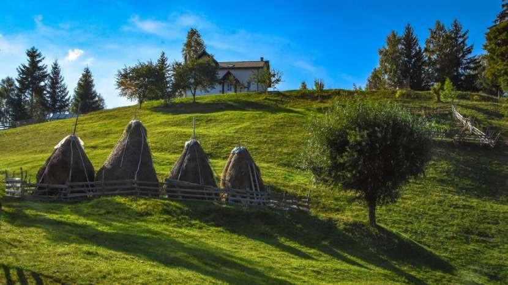
מעולם לא ממש התעניינתי בטיול לרומניה. שמעתי המון דברים טובים אבל מודה שלא היה לי חשק לנסוע, תמיד היה יעד 'שווה' יותר, עד שפתאום נכנס לי הג'וק של רומניה, קראתי כמה בלוגים וסיפורי טיול ופתאום ממש התלהבתי. רומניה הצטיירה כיעד שמתאים לנו כחובבי טבע וגם כשילוב מעולה עם ילדים בזכות פארקים שונים ואטרקציות. וכך נמצא לו היעד לחגי תשרי 23.
את הכרטיסים הזמנו בחודש אפריל ממש בתום הטיול להולנד, יצא שכרטיסים באל על עלו לנו יותר זול מוויז או לאו קוסט אחר וכללו מזוודות. את הרכב הזמנו מחברת סיקסט, בדרך כלל אנחנו מזמינים בבוקינג- הכי זול שיש להם, אולם הפעם שמעתי המון דברים על ניסיונות עקיצה בביטוחים בעת החזרת הרכב, אז הלכנו על ספק יותר יקר אבל יותר בטוח. הזמנו גם רכב SUV כי מהסיפורים הבנתי שיש הרבה כבישי עפר ודרכים צרות ברומניה (יש רק במקום אחד- כפרי מגורה ופשטרה שאפרט בהמשך), כך שלא באמת חייבים רכב SUV אבל נחמד שיש רכב מרווח ונוח.
מבחינת בגדים, לקחנו בגדי מעבר, חולצות קצרות, ג'קט ומעיל דק, בפועל היה ממש חם, לא היתה אפילו טיפת גשם אחת, מצד שני בבקרים די קריר ובערבים קפוא אז לא לוותר על בגדים חמימים לשעות הערב ובגדים קלילים לצהריים.
כסף- בכל מקום מקבלים אשראי בלי בעיה (חוץ מאמריקן אקספרס), מזומן צריך בעיקר לקניות בדוכנים לצד הדרך. הזמנו אלף ליי דרך fly money שאספנו בשדה וזה הספיק לנו לכל הטיול, משכנו עוד 200 ליי ליתר ביטחון- הכספומטים באנגלית וממש אין בעיה למשוך עוד אם צריך).
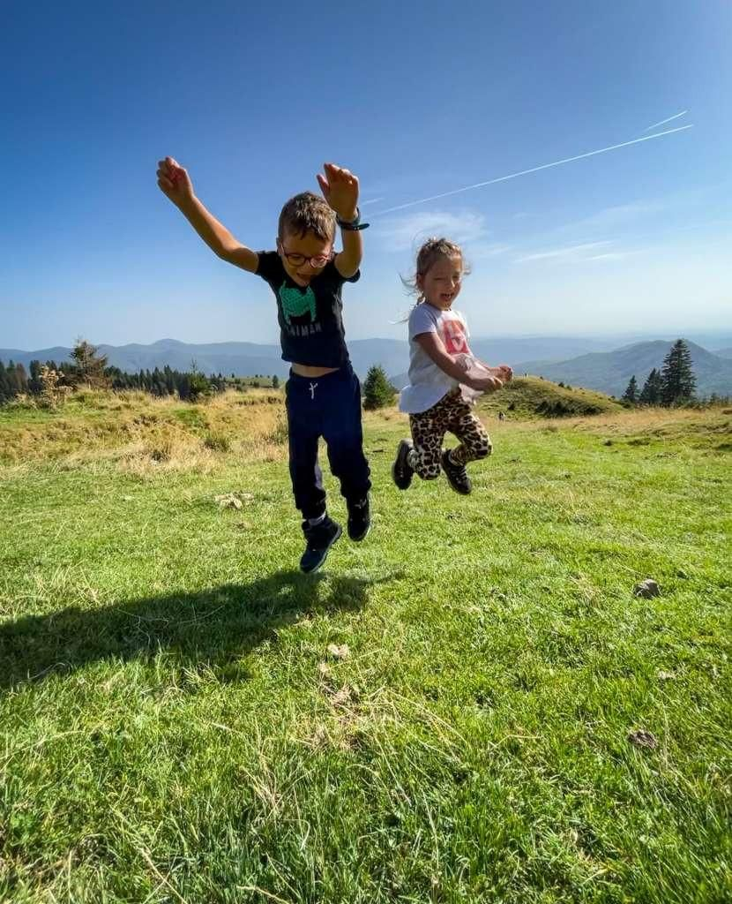
אז אחרי סיכום המנהלות, נתחיל בסיכום הטיול (סיכום קצר ותמציתי של עיקרי הדברים בסוף הפוסט):
יום 1- 9\21 טיסה
הטיסה שלנו יצאה בדיוק מופתי בשש וחצי בערב ונחתה בתשע וחצי בערב, הכל היה חלק למעט פשלה אחת של בעלי היקר שהתגלתה בשדה התעופה. מצלמת ה-OSMO נשכחה לה בטעינה בבית. אצלי לכל טיול יש סיכום כתוב אלבום תמונות וכמובן סרטון, זהו אני בהיסטריה, איך עכשיו אצטרך לעשות וידאו מהטלפון- אני שונאת לצלם וידאו מהטלפון, מתחילה הליך גירושים עוד רגע בשדה, אבל אז הקטנה שלי, אני לא יודעת מאיפה בת החמש וחצי למדה את זה, אומרת לי ' תנשמי אמא הנה ככה היא מראה לי, אנחנו נמצא פתרון', איך אפשר לכעוס אחרי זה. ספוילר- אכן נמצא פתרון לבסוף.
אני חייבת לציין שזה ממש נוח להזמין טיסת ערב, כך אחרי שעות מעייפות בשדה התעופה נוחתים, מסיימים מנהלות וישר לישון.
כאמור נחתנו בזמן, עברנו מהר את הדרכונים אולם חיכינו המון זמן עד שהמזוודות יצאו. דלפק סיקסט נמצא בקומה 1- , צריך לרדת קומה, לידו יש סניף של סופרמרקט קרפור שעובד 7\24, נוח מאוד למי שהולך לישון בדירה ולא רוצה או הספיק להצטייד בדברים בסיסיים לבוקר. קניתי לנו קפה, חלב וקורנפלקס לילדים כדי שנצא לדרך שבעים. לקחנו את הרכב ונסענו 5 דקות לדירה שלנו-
Bucharest Airport Residences & Therme- מדובר בקומפלקס דירות הנמצא 5 דקות משדה התעופה, הזמנו חדר סטודיו עם 2 מיטות, אחלה דירונת להעביר את הלילה אחרי הנחיתה. קיבלנו הנחיות מאוד ברורות לצ'ק אין למייל והכל היה מוכן לקראתנו.
יום 2- 9\22- ברוכים הבאים לרומניה
קמנו בשבע בבוקר, האכלנו את הילדים, שתינו קפה, התארגנו בעצלתיים ויצאנו לדרך לכיוון העיירה סינאיה.
מדובר בנסיעה מאוד משעממת בדרכים פקוקות- ברומניה תתכוננו לפקק, תמיד יהיה פקק מתישהו ואיפשהו.
אחרי שעתיים הגענו לסינאיה, עיירה יפיפיה בתוך יערות מטורפים, זוכרים את סאגת המצלמה? קפצנו לסניף של חנות flanco חנות מכשירי חשמל שיש שם גם מצלמות, התחדשנו במצלמה, לסרטון הוידאו העתידי שלום, אפשר להמשיך בטיול.
העיירה סיניאה הינה עיירה הררית בהרי הבוצ׳גי, העיר סינאיה קרויה על שם הר סיני. מייסד העיר, הספטאר מיכאיל קנטקוזינו, אחיו של השליט שרבאן קנטקוזינו, שערך מסע לארץ הקודש וביקר בהר סיני, במנזר סנטה קתרינה, בנה מנזר לזכר מסעו וחזרתו בשלום בשנת 1690 ומסביב למנזר התפתחה העיר.
העיירה מדהימה, רחובות מוקפים ביערות ירוקים וענקיים, הייתי שמחה לשוטט קצת ברחובות סינאיה, העיירה ממש מזמינה שיטוט ברחובות, אולם אנחנו רעבים, והשעה כבר 12 בצהריים והרעב מציק. החלטנו להתקדם עם התוכנית שלנו ולנסוע לרכבל קוטה, לאכול דווקא במסעדות בגובה 1400 ולא בעיירה, בדיעבד אולי עדיף היה למצוא מקום נחמד בעיירה, בכל מקרה, נסענו לרכבל הגונדולה, רכבל חדיש, קנינו כרטיס רק לגובה 1400 פשוט כי היה ענן מטורף על הפסגה ונראה לנו מיותר לעלות למעלה בתנאים כאלה. עלות כרטיס 60 ליי למבוגר ו-40 לילד. נוף משגע של יערות והעיירה סיניאה מתחת. ירדנו בגבה 1400 והלכנו למסעדה ליד, שימו לב שאין שם מבחר מסעדות רק אחת. האוכל סביר, לא ואו אבל הפטריות והלימונדה טעימות בטירוף. כמו שרבים כתבו לפני, השירות ברומניה איטי, מאוד איטי, וכשמתכננים ארוחה במסעדה שריינו לפחות שעה וחצי.
שבעים ומרוצים יצאנו לסיבוב קצר סביב המקום, הנוף יפה אבל לא כלכך מצאנו מה לעשות שם, אפשר כמובן לרדת ברגל לעיירה שזה יכול להיות טיול נחמד אולם רצינו להספיק לארמון פלש.
ליד הרכב חיכתה לנו הפתעה בדמות שועל חמוד שזלל נקניקיות שמישהו השאיר, כמובן שהוא זכה לכמה צילומים.
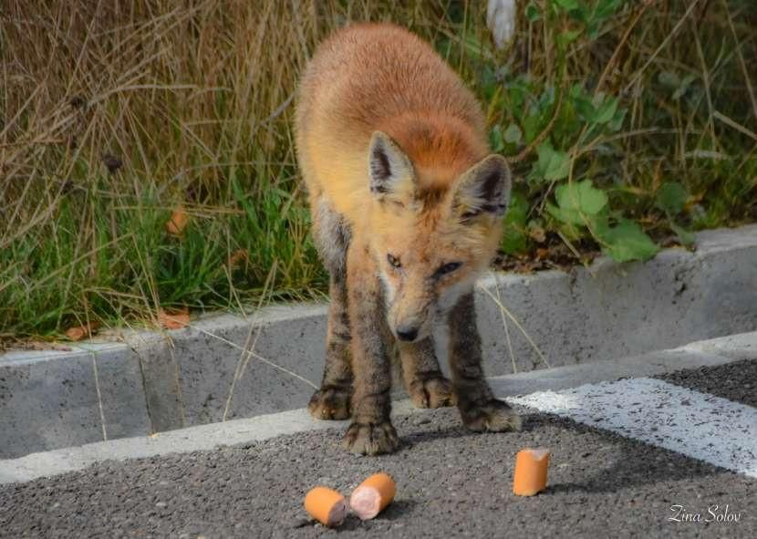
משם ירדנו בהר ונסענו דרך העיירה לארמון פלש.
קצת על הארמון: הוא נבנה עי מלך רומניה הראשון בין השנים 1873-1914, הבניה הסתיימה עם מות המלך. מאז הארמון שימש לאירוח בני מלוכה ואושיות חשובות.
סביב הארמון יש כמה חניות, חנינו בחניון גדול בעלות של 5 ליי. משם יש הליכה של כעשר דקות עד הארמון, הליכה בתוך יער יפיפה (Poteca regala) וילדו זורם נחל, מעת לעת רואים מפלונים, סנאים, והכי כיף זה פשוט ריח היער והאוויר הטרי.
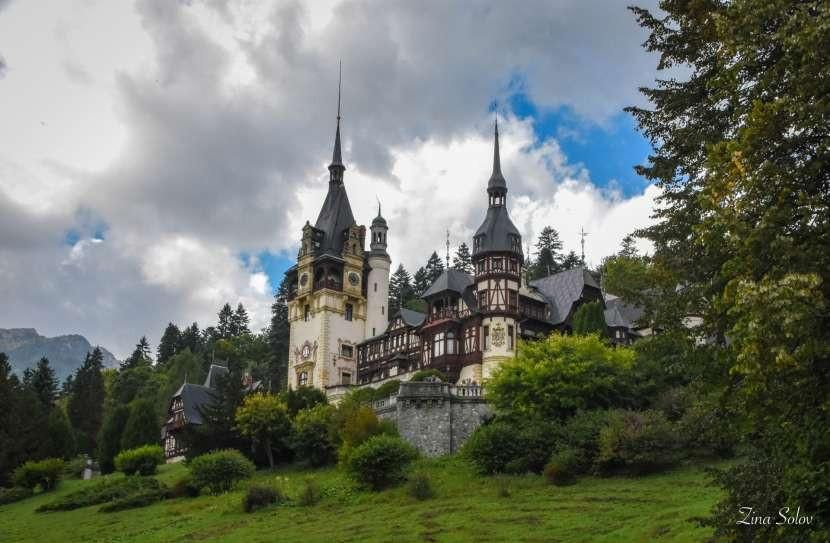
בגלל שהגענו בשעה יחיסת מאוחרת סביב 15:00 לא היו הרבה אנשים, הדוכנים היו סגורים ברובם אם כי המסעדות עבדו. הארמון עצמו מרשים ויפיפה. הילדים נורא רצו להיכנס פנימה לארמון אז נכנסנו רק לקומת הקרקע, בלי סיור, לא נדרשנו לשלם עבור הילדים רק עבורי 30 ליי (האבא העדיף לנוח קצת על הספסל בחוץ מול המזרקה וללמוד את הפיצ׳רים של ה-go pro החדשה). כשאין הרבה אנשים החוויה של טיול בתוך הארמון נחמדה ממש, הילדים נורא התלהבו לראות כלי נשק, שריונות אבירים ודגמי אבירים, כסאות מלכות ונברשות.
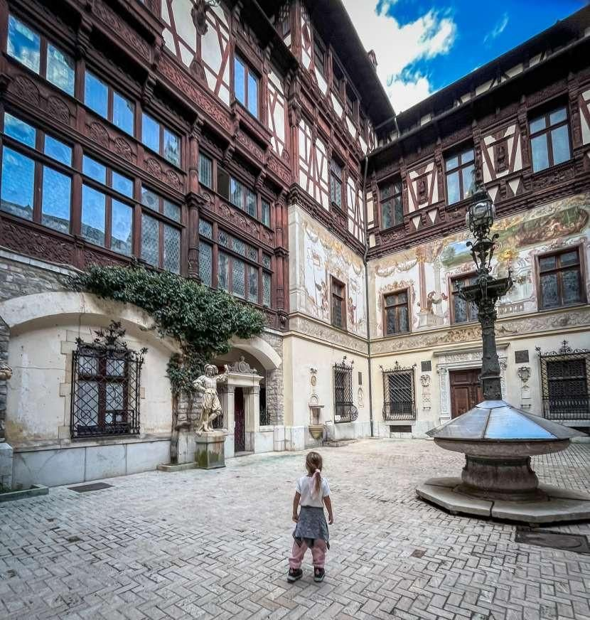
כשיצאנו טיילנו קצת סביב הארמון, והמזרקה החמודה בכניסה. מי שרוצה יכול לעצור לנשנוש באחת הקפיטריות ליד, אנחנו לא עצרנו, העדפנו לקנות להם גלידה באחד הדוכנים הפתוחים.
משם עזבנו את סינאיה ונסענו לדירה שלנו בבושטני- העיירה הסמוכה. לקח בדיעבד, הייתי נשארת ללון בסינאיה, העיירה ממש חמודה ומזמינה לטייל שם והרגיש שלא מיצינו אותה.
העיירה בושטני נמצאת כעשרים דקות מסינאיה אבל הדרך רוב הזמן פקוקה, ואכן לקח לנו כ-40 דקות להגיע לבושטני (עוד אחרי קיצורים של גוגל מאפס). נסענו לסניף lidl להצטיידות במצרכים ומשם ישר לדירה החמודה שלנו ליומיים הקרובים:ֿ Studio 35 Busteni- הדירה נמצאת 5 דקות הליכה מטירת קונטקוזינו- בה צילמו את הסדרה WEDNESDAY, הדירה מאוד מרווחת ונעימה, 2 חדרי שינה, סלון, 2 שירותים, מטבח מאובזר, נוף יפה, ודב שמגיע מדי פעם לחטט בפחים, את הדב לא ראינו, אבל את הפח ההפוך והזבל המפוזר ראינו ועוד איך.
אכלנו ארוחת ערב תוצרת עצמית (המטבח ממש מאובזר בכל טוב) במרפסת המקסימה של הדירה עם נוף מרשים להרי הבוצ׳גי, איזה סיום נהדר ליום הראשון שלנו ברומניה.
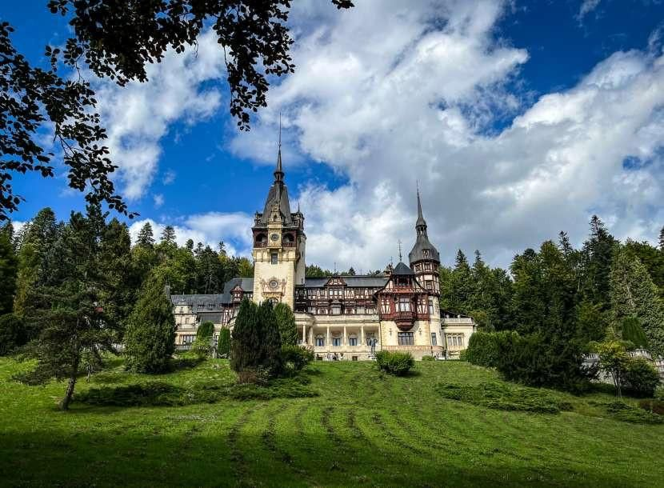
יום 3 23/9- טבע רומני
קמנו לבוקר שמש יפיפה וחמים. עדיין בבוקר כדאי לשים ג׳קט כי בכל זאת טיפה קריר אבל בהמשך היום ממש מתחמם.
אכלנו ארוחת בוקר זריזה בדירה והכנו כמה סנדוויצים לפיקניק. היום אנחנו עושים טיול בשמורת הבוצ׳גי.
רכס הבוצ׳ג הוא רכס הרים, המהווה חלק מהקרפטים הדרומיים, נמצא במרכז רומניה בין טרנסילבניה בצפון לוולאכיה בדרום. הרכס ידוע בנופיו ומהווה אתר תיירות חשוב של רומניה. בעבר שימש הרכס כמגן טבעי של טרנסילבניה ושל ממלכת הונגריה בפני פולשים מהדרום, כאשר מעברי ההרים שחוצים אותו מהווים את דרכי החדירה העיקריות. המקום מוגדר כשמורת טבע וכולל כמה אתרים כמו- הבבלות, הספינקס, אנדרטת זכרון למטוס היסעור של חיל האויר שהתרסק באיזור בהמשך טיסת אימון ועוד אתרים.
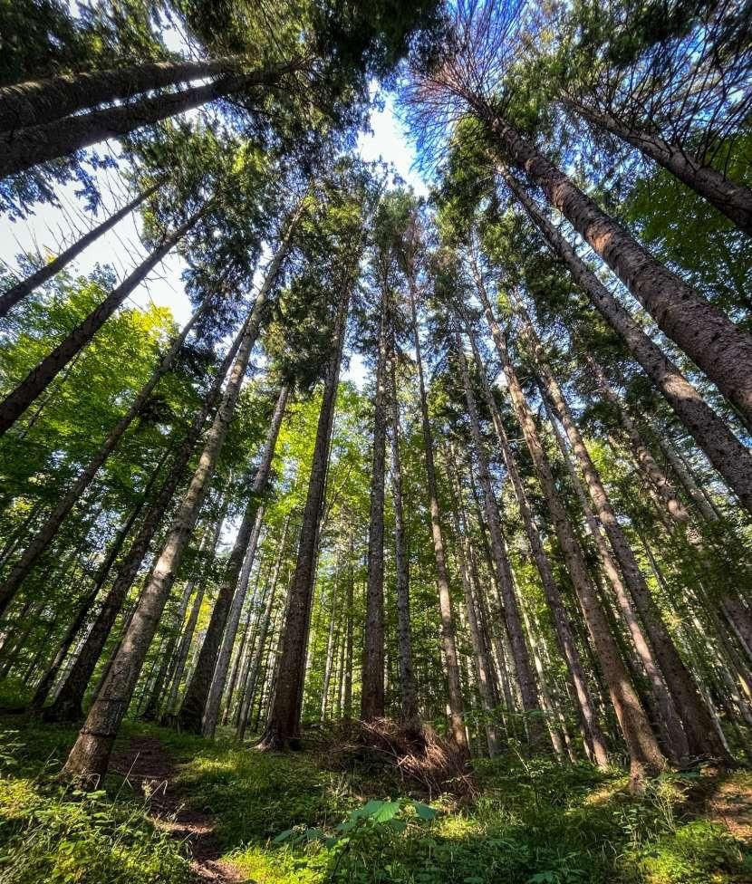
אנחנו מתחילים בנסיעה לכיוון אגם בולבוצ׳י, חוזרים לכיוון סיניאה ומשם נוסעים בכביש מפותל ויפיפה העובר בתוך יער עבות עד שמגיעים לפסגה, שם עצרנו לעצירה ראשונה- Transbucegi (מעבר הרים). יש במקום קפיטריה וחניון לרכבים, בגלל שהיום יום שבת וגם יש פסטיבל באיזור יש המון המון מטיילים מקומיים עד כדי שהחניון מלא גם באוהלים וקראונים. ירדנו מהרכב לסיבוב לראות את הנוף המשגע של ההרים והיער, ניתן לעלות לגבעה עם הצלב אבל העדפנו לשחק עם הכלבים שהסתובבו סביבנו, על פנינו חלף רועה צאן עם עדר כבשים, ממש כאילו חזרנו אחורה בזמן.
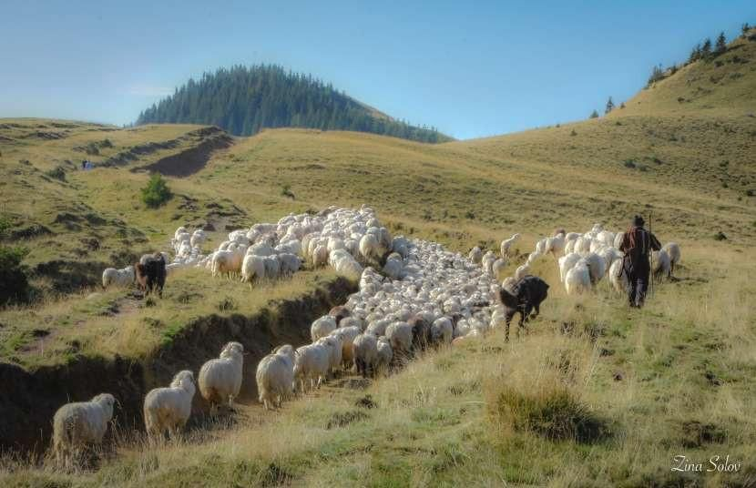
משם המשכנו לאגם, המטרה היתה למצוא נקודה לפיקניק על גדת האגם אבל לא באמת מצאנו נקודה כזאת.
עשינו עצירה ליד הסכר המרשים, ניתן לטייל לאורך הסכר עד לגדה השניה של האגם. האגם יפה אם כי לא משתווה לאגמים באוסטריה. משם הקפנו את האגם בחיפוש אחר נקודת פיקניק, מצאנו נקודה ליד מלון belmont. מדובר בפנינת טבע, דשא עצים ונחל. מיד חלצנו נעליים והרטבנו רגליים במים הקפואים, פרשנו שמיכה והנה אחלה מקום לפיקניק. משם יוצא גם מסלול Turbăria Lăptici לא עשינו אותו אלא טיילנו עוד קצת לאורך הנחל. אחרי שמיצינו ושבענו, המשכנו לנקודה הבאה והיא מערת יאלומטי. מדובר במערת נטיפים יפיפיה ובה זורם נחל עם מים נקיים לגמריי ללא חיידקים כלל.
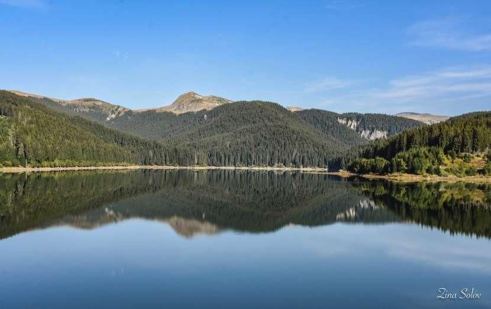
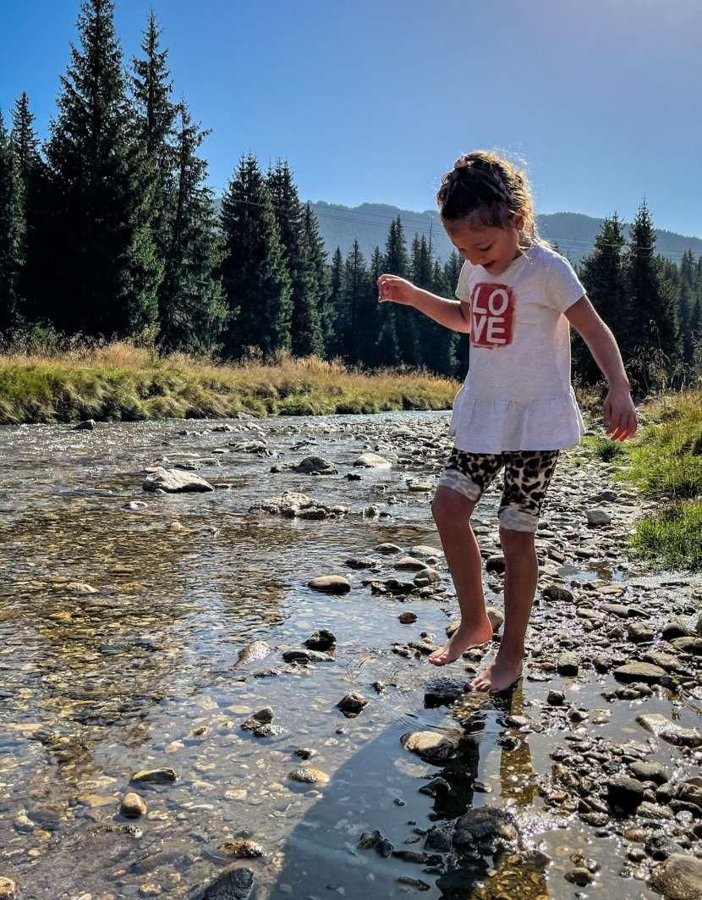
נסיעה של 10 דקות מאגם בולבוצ׳י, הגענו לחניה בעלות של 12 ליי לרכב. מהחניה הולכים ברגל כ-20 דקות חצי שעה. למי שמתקשה יכול לקחת כרכרה (המופעלת ע״י צוענים, כשראינו את היחס המחפיר לסוסים לא ממש רצינו להשתמש בשירות הזה גם לא בחינם- והוא לא בחינם). ליד החניה יש מתחם ענקי של דוכנים, שמוכרים בשרים, גלידות ומה לא, כל המתחם צמוד לנחל מדהים ובכלל המקום הוא פשוט פנינת טבע. אנחנו הולכים להנאתנו בשביל מסומן היטב, בתוך יער יפיפה, צמוד לנחל הזורם וכל כמה מטרים רואים מפלונים.
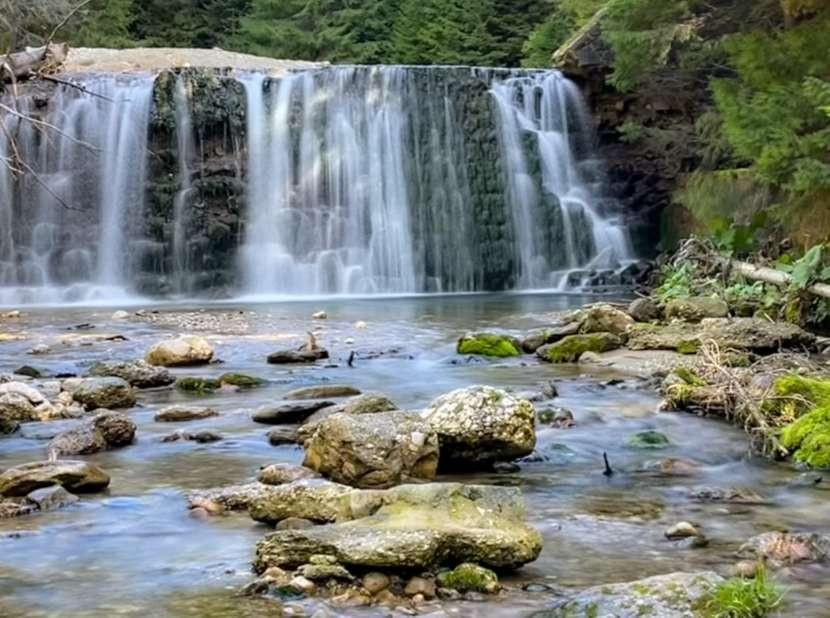
ההליכה לא קשה, בערך 20 דקות ומגיעים לפתח המערה, יש שם מנזך יאלומטי. עלות כניסה 40 ליי למבוגר, ילדים חינם. מקבלים קסדות ונכנסים לתוך ההר. מומלץ להביא ג׳קט כי קריר בפנים וגם לח ורטוב. המערה פשוט ענקית, היינו בכמה מערות בחיינו אבל זאת באמת ענקית, השביל מוביל מעלה ומטה, יש מקומות שצריך להתכופף, לגבוהים מבינכם תתכוננו להרבה כאבי גב מהליכה כפופה. לא עברנו את כל המערה, הגענו עד למפל תת קרקעי של פלג מים, ומשם חזרה.
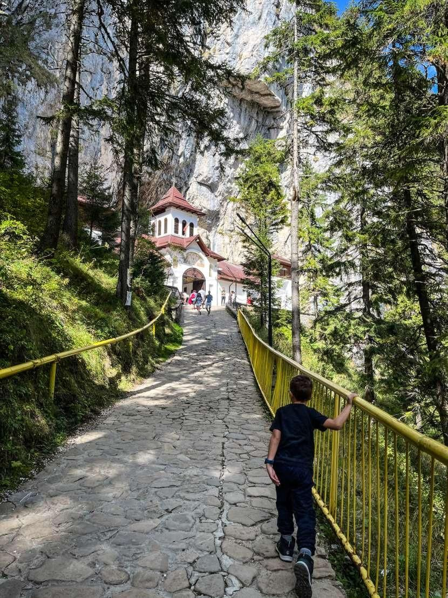
ההליכה חזרה לרכב היתה מהנה ממש, עשינו המון עצירות לצילום וסתם להנות מהטבע המדהים. לסיום עצרנו וקנינו לנו נקניקיות וגלידה לילדים, אכלנו במתחם הדוכנים ליד פלג המים, ממש חוויה כיפית בטבע.
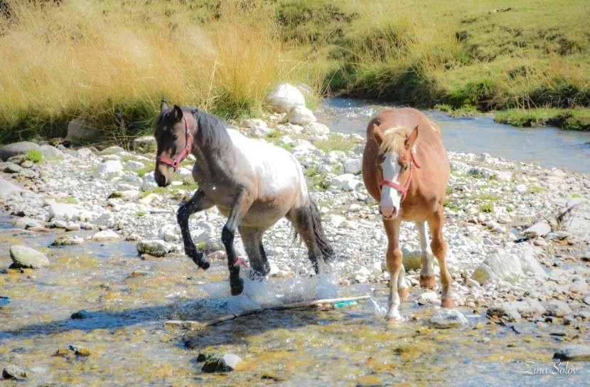
משם רצינו להמשיך להקיף את האגם לכיוון תצפית Cheile Tătarului אולם הכביש היה סגור.
התחלנו בנסיעה חזרה לכיוון סינאיה, עם עוד עצירה אחרונה ליד דוכנים ותצפית נוף משגעת Panorama Transbucegi. הצוציקים מבקשים חרבות עץ, אז קונים להם מזכרת וכמובן צנצנת ריבת פטל…
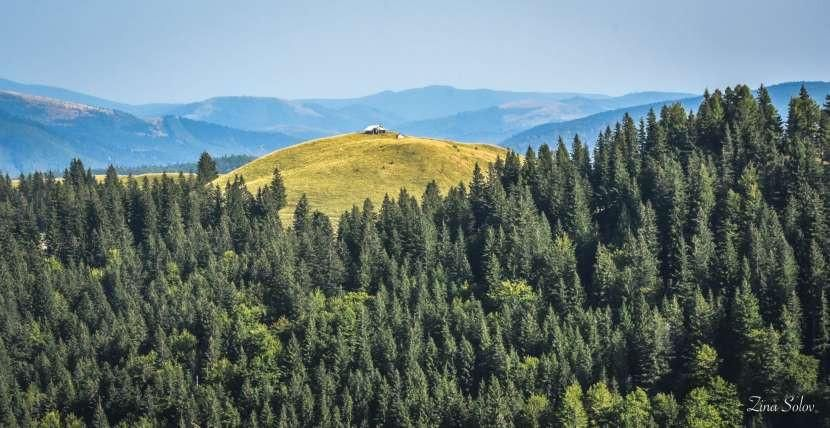
משם שוב דרך היער המדהים לסינאיה, ומשם לבושטני לדירה.
אחרי שעה של מנוחה בדירה החלטנו לעשות טיול ערב נחמד לטירת קנטקוזינו בה צולמה הסדרה ״וונסדי״, הילדים עוד קטנים לצפות בסדרה אבל טיול בטירה בשעת ערב תמיד נחמד. הטירה נמצאת 5 דקות הליכה מהוילה.
הטירה נבנתה ב-1911 (בנייתה נמשכה 5 שנים) ושימשה למנוחה ציד ומגורים. שילמנו 80 ליי רק למבוגרים והכניסה היתה רק לגנים ולא לתוך הטירה. בסה״כ הגנים יפיפיים, בכל מקום פזורות עמדות צילום בהשראת הסדרה וכן נדנדות, המזרקות ממש יפיפיות. בגדול לא הייתי מתאמצת להגיע במיוחד אבל כטיול ערב ליד הדירה זה ממש נחמד.
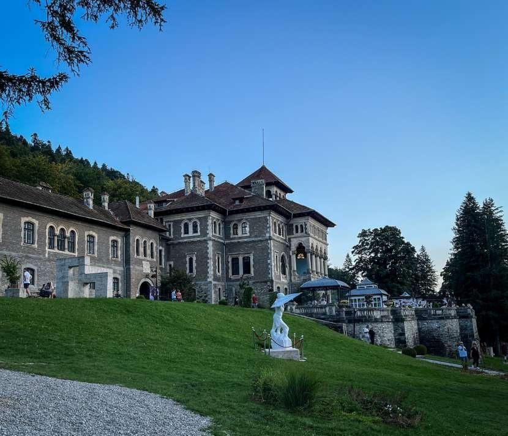
משם חזרנו לדירה לעוד ארוחת ערב תוצרת עצמית אל מול נוף הרי הבוצגי. היום היה אחד מהימים היותר כיפיים בטיול.
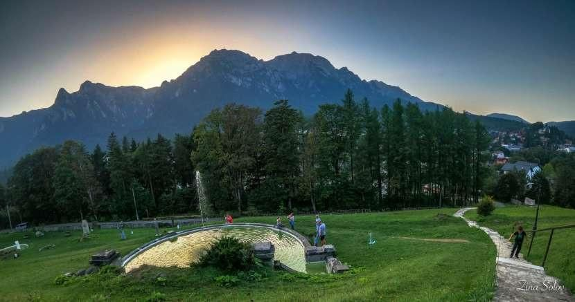
יום 4 24/9- פסגת הבוצגי
התעוררנו לעוד בוקר שמשי ויפה. התכנון להיום היה לטייל למפל השואגת ומשם לפארק קלינדרו- פארק קטן עם אבובים ומגלשות הרים, אולם ברומניה מחוץ לעונה, מאוד קשה לתכנן את הטיול סביב המקומות הפתוחים- למשל חלק מהאתרים פתוחים רק בסופש (שישי עד ראשון), חלק סגורים בראשון, חלק סגורים בשני, חלק בשלישי, וכן הלאה, מאוד קשה לשלב הכל בסודוקו הזה.
וכך יצא שדווקא פארק קלינדרו סגור בימי ראשון, ממש חבל כי היום אנחנו עוזבים את הדירה לכיוון רשנוב אז לצערי לא נצליח לבקר בפארק.
התלבטתי מאוד אם לעשות את מסלול השואגת או לחלופין לעלות ברכבל הבבל (beble) בבושטני ולטייל בפסגה, מצד אחד לא היינו בפסגה עם הגונדולה בסיניאה בגלל ענן, מצד שני מסלול בתוך יער גם נראה נחמד, אם כי מצפיה בתמונות לא התרשמתי שהמפל שווה את זה (אחרי המפלים באיסלנד קשה למצוא משהו שיכול לעמוד בתחרות). כשיש דילמה נותנים לצוציקים להחליט מה בא להם- רכבל או מסלול למפל, פה אחד נבחר הרכבל ולכן לאחר שארזנו את הדברים ופינינו את הדירה נסענו לכיוון רכבל הבבל.
מאחורי הרכבל יש חניון גדול בתשלום (5 ליי), אבל ממש לפני מבנה הרכבל יש מלון ולידו החניה חינם. שימו לב שהרכבל הזה ממש ממש יקר, עלה לנו 190 ליי לכיוון ל-4 אנשים (2 מבוגרים ו-2 ילדים), הרכבל אינו חדש אלא מדובר הקרון אחד בו נכנסים מלא אנשים ויש מפעיל מקומי לקרון עם ציוד משנות תרפפוי.
הנסיעה ברכבל בהחלט מכונה ״חויה״, הרכבל עולה מעל היערות והצוקים ולפעמים כדי לווסת את התנועה הוא פשוט עוצר- תלוי מעל תהום, מודה שחשבתי שאם הוא נופל כאן, אין פשוט אין לאף אחד סיכוי להינצל, מצד שני רמת האדרנלין בשמיים והנוף משגע, זה עדיין לא מנע מברכי לשקשק ולקלל את הרגע שהסכמתי לעלות על הרכבל, פתאום מסלול ביער נראה הרבה יותר קוסם. לאחר טיפוס איטי מאוד שלקח כ-20 דקות עלינו סוף סוף לפסגה של הבוצג׳י.
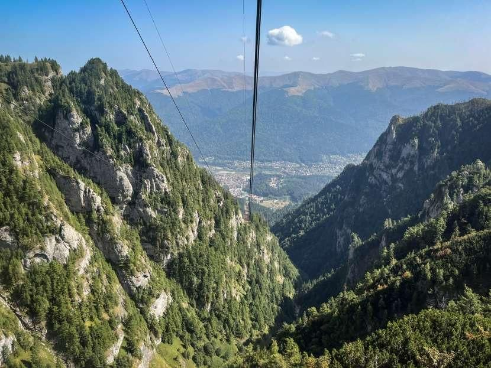
מתחנת הרכבל יש שפע מסלולים לטיולים- ניתן לרדת למטה לכיוון שמורת הבוצג׳י היכן שטיילנו אתמול, בסהכ הליכה של כ-5 שעות ותגיעו למערת יאלומטי. אפשר ללכת בכיוון סיניאה ולרדת שם ברכבל, אפשר ללכת לפסגת הצלב שראינו מהמרפסת כל יום, או שאפשר לעשות מסלול קליל ולטייל לבבלות והספינקס- שזה מה שבחרנו.
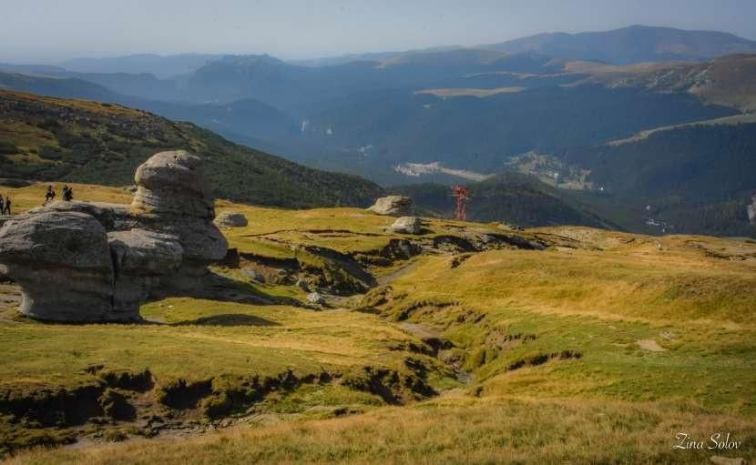
הבבלות והספינקס הם בעצם תצורות סלע שמזכירות גברות קשישות וספינקס, השביל מסודר וההליכה קלילה. בגלל שהיום יום ראשון יש מלא מטיילים מקומיים (כמו אתמול, ייתכן וזה גם בזכות הפסטיבל). בכל מקרה הנוף מהפסגה יפיפה, אוויר צלול ונעים, אפילו חמים כי כולנו עם בגדים קצרצרים. לא ממש התרשמנו מהספינקס, הבבלות היו יותר מגניבות, טיפסנו קצת על הסלעים, וקינחנו בפיקניקון על הפסגה.
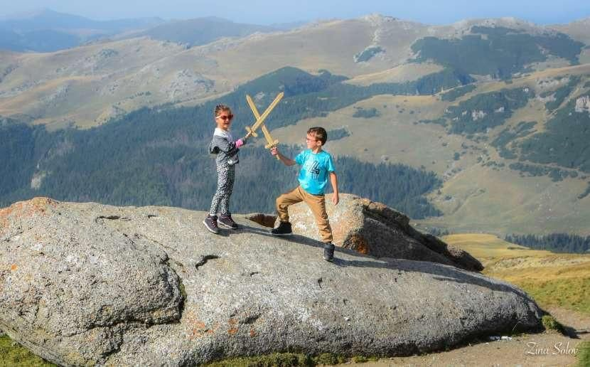
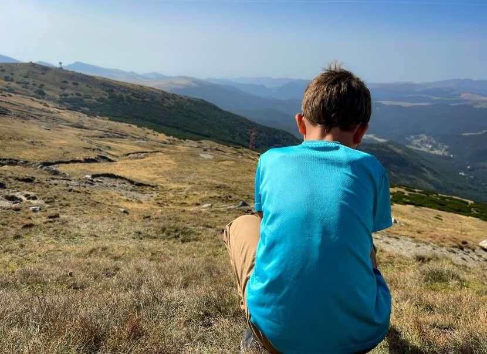
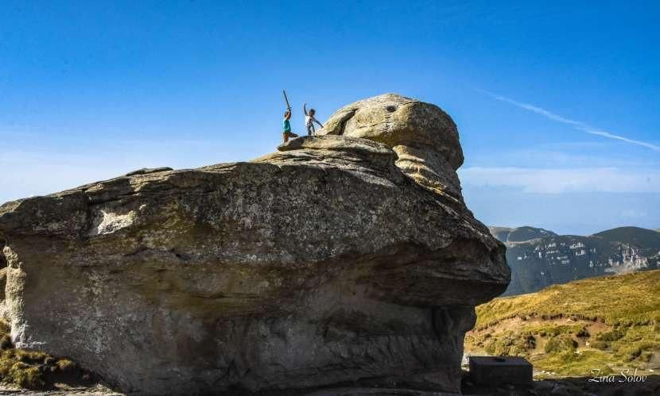
השעה כבר אחת, כדאי שנתחיל לרדת. הרכבל יורד ברגע שמתמלא, אין באמת לוח זמנים. הירידה היתה מהירה יותר מהעליה (לא היינו תלויים מעל הצוק, הקלה!). כשירדנו, מודה שעוד שקלתי לעשות את מסלול השואגת אבל קיבלתי וטו משולש.
התחלנו בנסיעה לכיוון הדירה הבאה שלנו סמוך לעיירה רשנוב, מדובר בנסיעה של כשעה, אולם בגלל הפסטיבל והשיפוץ של הכביש לברשוב הנסיעה היתה סיוט אחד גדול, נסענו שעתיים וחצי כשרוב הזמן פשוט עמדנו בפקק אינסופי. אמנם הדרך יפה אבל היה קשוח.
הגענו לדירה המקסימה ברשנוב- Cedar Crest, דירה מדהימה, הנמצאת כ-5 דקות נסיעה מהעיירה רשנוב. יש 2 יחידות אירוח זהות, עם חצר משותפת ענקית ובה מלא מתקנים לילדים- מגלשות אומגה טרמפולינה, וגולדן רטריבר מתוק של הבעלים ששעשע יופי את הילדים, מתקני ברביקיו, מתקן למדורה. בדירה 2 חדרי שינה גדולים וסלון מרווח. מקלחת ושירותים חדשים, מטבח קומפקטי ומאובזר היטב החיסרון היחיד זה המקרר הקטן ואין מכונת כביסה.
אחרי הנסיעה הארוכה נתנו לילדים לפרוק אנרגיה בגינה המדהימה עם שפע המתקנים ואחרכך קפצנו לגיחה לקניות בסופר הענקי ליד רשנוב- Kaufland שהפך להיות הסופר הקבוע שלנו ב-5 ימים ששהינו בדירה.
בערב פגשנו משפחה ישראלית שהתארחה ביחידה השניה, ומיד נוצר חיבור טוב בינינו ההורים ובין הילדים.
את הערב העברנו בדירה, עשינו על האש סופר טעים ועוד יום מוצלח הגיע לקיצו.
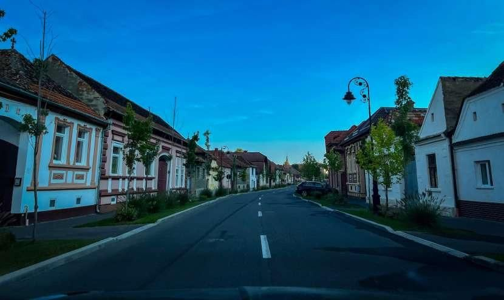
יום 5 25/9- מבצר דינוזאורים ומגלשות הרים
איזה כיף להתעורר בבית כפרי, לשתות קפה בחוץ בזמן שהילדודס מתרוצצים עם הכלב של בעל הדירה והילדים השכנים. לקחנו את הבוקר באיזי, אין לאן למהר כי כל האטרקציות המתוכננות להיום נפתחות רק בעשר.
לאחר התארגנות בוקר ארוכה במיוחד, יצאנו לדרך. היום מטיילים בסביבת רשנוב, התחנה הראשונה זה מבצר רשנוב שנראה היטב מהכביש המהיר. שימו לב שהמצבר בשיפוץ וניתן להכנס רק לחצר שלו.
חונים למטה בחניון המשמש גם את באי המבצר וגם את באי הדינופארק, בעלות 12 ליי. משם לוקחים טרקטור שנוסע עד למעלה למצבר, ניתן גם ללכת ברגל אבל לילדים כיף בטרקטור (מודה שכבר לא זוכרת כמה זה עולה, סביב 5-10 ליי). שימו לב שהדינופארק הוא העצירה הראשונה, אני ממליצה לנסוע קודם למבצר ואז לרדת ברגל או בטרקטור לדינופארק.
המבצר נבנה בימי הביניים בין השנים 1211-1225 ושימש כהגנה לתושבי רשנוב והישובים הסמוכים, כאשר עבר צבא ממעבר ההרים בברן לכיוון ברשוב והפוך הכפרים היו בעצם בדרכו והדרך היחידה שלהם לשרוד היתה לעבור להתגורר במבצר.
המבצר ממש מרשים, החצר גדולה וכמובן יש את כל המאפיינים של מצבר- תותחים, שער ברזל כבד, אבל הכי יפה זה הנוף הנשקף משם.
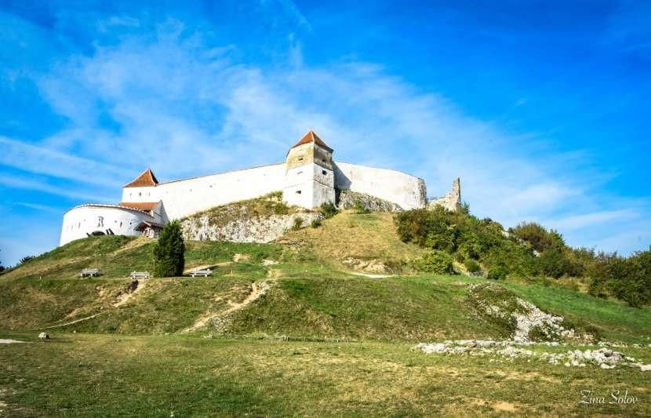
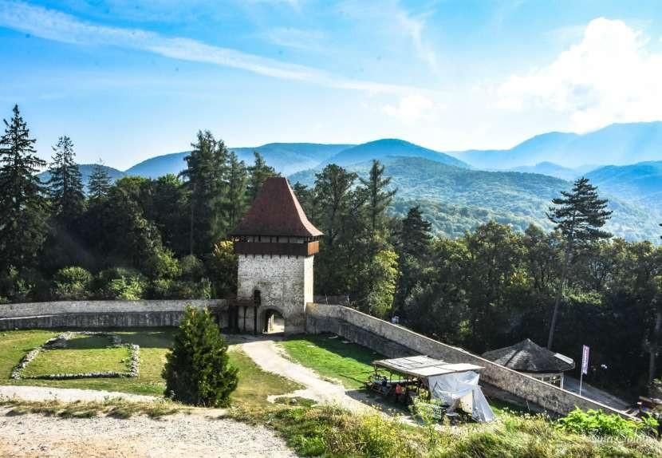
אחרי סיבוב לא ארוך במבצר המשכנו לדינופארק, מדבר בפארק דינוזאורים גדול, עם שפע מייצגים של דינוזאורים ועוד אטרקציות. כרגיל ברומניה עלות הכניסה של הפארק (44 ליי למבוגר ו-32 ליי לילד) לא כוללת מלא אטרקציות בפנים שעליהם תצטרכו לשלם עוד כ-10-15 ליי לאדם.
הדינופארק הוא מקום ממש נחמד המאפשר לילדים לרוץ ולהתרוצץ, במקום משחקיות, קולנוע רב מימדי (בתשלום נפרד) דגם הר געש, פלטפורמה שמדמה רעידות אדמה ועוד מלא מייצגים יפים.
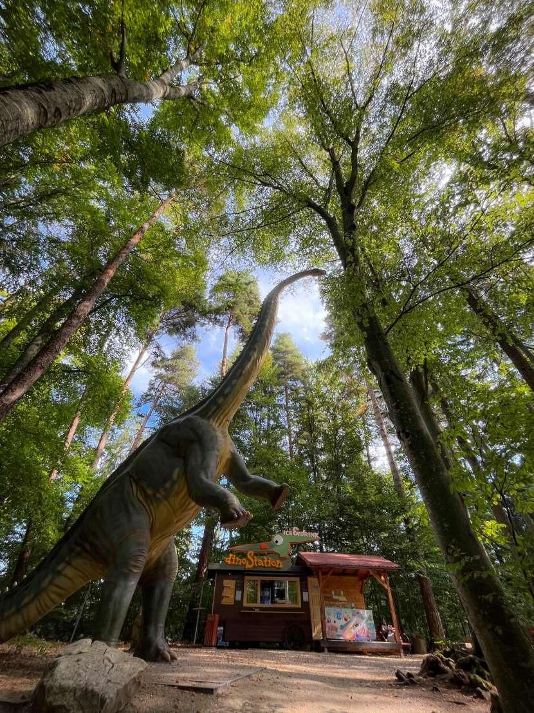
התחלנו בקולנוע, הסרט ממש נחמד ומכניס לאווירת הדינוזאורים, משם עשינו את המסלול סביב דגמי הדינוזאורים בגודל טבעי (וענקי), ראינו את הר הגעש ורעידות האדמה (שוב לא משתווה למציאות באיסלנד אבל לא רע לילדים). בגלל שאנחנו לא בעונה המקום לא היה מלא באנשים כך שלא היו תורים והילדים נהנו ממש.
משם לארוחת צהריים במסעדה שהומלצה רבות- La Promenadă, המסעדה נמצאת בשולי העיירה וליד יער וגינת משחקים כך שיש לילדים מה לעשות עד שמחכים לאוכל. השירות לא רע אם כי פחות התלהבנו מהאוכל (אולי ״נפלנו״ במנות) אבל סה״כ נחמד להפסקת צהריים.
משם החלטנו לצ׳פר את הילדים (וגם קצת את עצמנו) במגלשת הרים. לצערי לא הצלחנו לבקר בפארק קלינדרו בבושטני, אז מגלשת ההרים הנוספת בסביבה היא המגלשה החדשה באיזור פונדטה, אמנם לא נסיעה קצרה וקצת מחוץ לאיזור (נוסעים לכיוון בראן ומשם עוד נסיעה עד לאתר סה״כ כ40 דקות) אבל הבטחנו להם מגלשת הרים וגם קיבלנו שפע המלצות על המקום מהשכנים הישראלים שלנו לדירה שאמרו שאתמול היה שם מלא אטרקציות לילדים.
אני חייבת להגיד שאיזור בראן פשוט משגע ביופיו, גבעות ירוקות וכפרים, בכל מקום ערימות חציר וסוסים, פרות וכבשים בכל פינה, התאפקתי מלא לעצור כל שניה ולצלם. הרומנים ממש הפתיעו לטובה בשילוט, יש שילוט למקום כ-10 ק״מ לפני היעד, שילוט עקבי וברור. מדובר על מתחם סקי Cheile Grădiștei, המקום משגע ביופיו, מלא מלונות לסקי שכרגע ריקים מן הסתם. כאן נכונה לנו קצת הפתעה, המקום פשוט ריק! מהתיאורים ששמענו אתמול היו במקום אומגות, טרקטורים, מגלשות אבובים, מגלשת הרים ומה לא, עכשיו המקום נראה כמו עיירה נטושה בסרט המערב הפרוע. אין נפש חיה. נסענו בעקבות השילוט למגלשת ההרים, לשמחתנו הם עובדים, אם כי המוכר לא ידע להגיד אם עוד משהו פועל- נראה שלא.
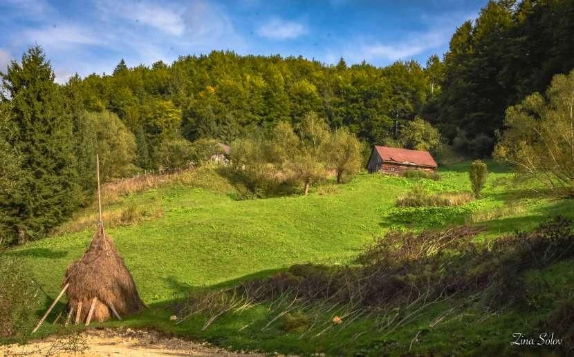
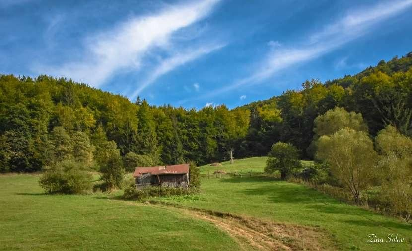
מגלשת ההרים היא חדשה ממש, נחנכה ביולי השנה. מדובר בנסיעה קצרה יחסית למגלשות שעשינו באוסטריה אבל עדיין זה כיף חיים, עד כדי דך שכמובן עשינו שני סיבובים, מחיר 140 ליי לסיבוב ל-4 (2 מבוגרים ו-2 ילדים). עשינו סיבוב עם הרכב במתחם לראות אם עוד משהו פתוח אבל חוץ ממסעדה ומלונות ריקים לא ראינו כלום. בסוף מצאנו גינת משחקים חמודה לילדים בין שני בתי מלון.
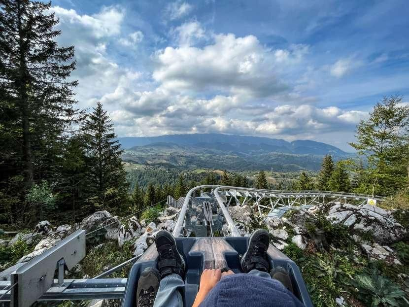
משם חזרנו בדרך המהממת- רק בשביל היופי של האיזור היה שווה לנסוע. כמובן שגם אנחנו עצרנו במאפיית פאנר (אחרי כל ההמלצות) ולקחנו טייק אווי של מלא עוגות ומטעמים לערב.
חלפנו על פני טירת בראן- אליה נגיע מחר, ומשם לעצירה להצטיידות בסופר האהוב עלינו.
בערב עשינו ארוחת על האש מעולה לשני המשפחות, הדלקנו מדורה לילדים עם מרשמלו וכמובן העוגות ממאפיית פאנר נאכלו כולן בתיאבון רב.
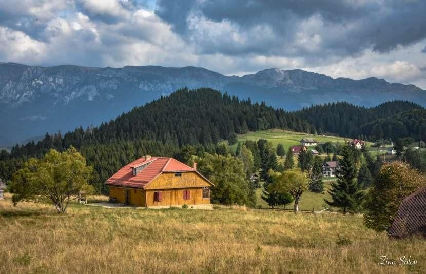
יום 6 26/9- דובים, יער ודרקולה
הבוקר קמנו יחסית מוקדם, מתוכנן לנו ביקור בשמורת הדובים Libearty Bear Sanctuary
מדובר במקום שמחלץ דובים חומים שנפגעו מהתעללות ובעצם נותן להם בית בטוח, איזור מחיה ענקי ומזון בכדי שיוכלו להיות ״פשוט דובים״.
צריך לתאם את ההגעה מראש, וניתן לעשות זאת בקלות דרך האתר שלהם- https://millionsoffriends.org/en/
שימו לב שלא מדובר בגן חיות, ולכן גם כניסה עם ילדים מתחת לגיל 5 אסורה, בינינו גם אין להם מה לעשות שם וסתם ישתעממו. תיאמנו לסיור של 10 בבוקר (יש ב10 ו-11). המקום נמצא ליד העיירה זרנשטי סמוך לכביש המהיר ממנו יוצאת דרך עפר עד למקום, גם פה השילוט מצויין ואי אפשר לפספס.
היינו קבוצה מאוד גדולה עם הדרכה באנגלית, סיירנו ליד הדובים (גם ראינו אותם) ושמענו המון סיפורי זוועה על ההתעללות שהם עברו, תרגמנו חלק מזה לילדים והם ממש התעניינו בסיפורים וריחמו על הדובים. זכינו גם לראות קבוצת דובים אוכלת ארוחת בוקר. סה״כ מדובר על סיור של שעה אבל לדעתי זו חוויה ממש טובה להכיר גם את העולם הנורא של התעללות בדובים. שימו לב מותר לצלם בטלפון אבל עבור האפשרות לצלם במצלמה מקצועית נדרש לשלם תשלום נוסף, היות והדובים מעבר לגדר אני לא לקחתי את המצלמה הטובה שלי והסתפקתי בצילומי טלפון.
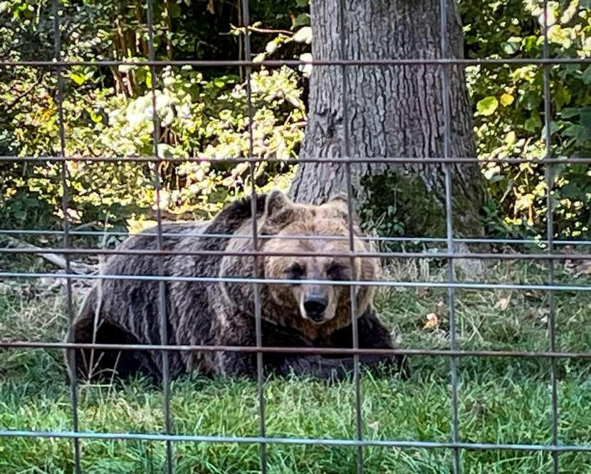
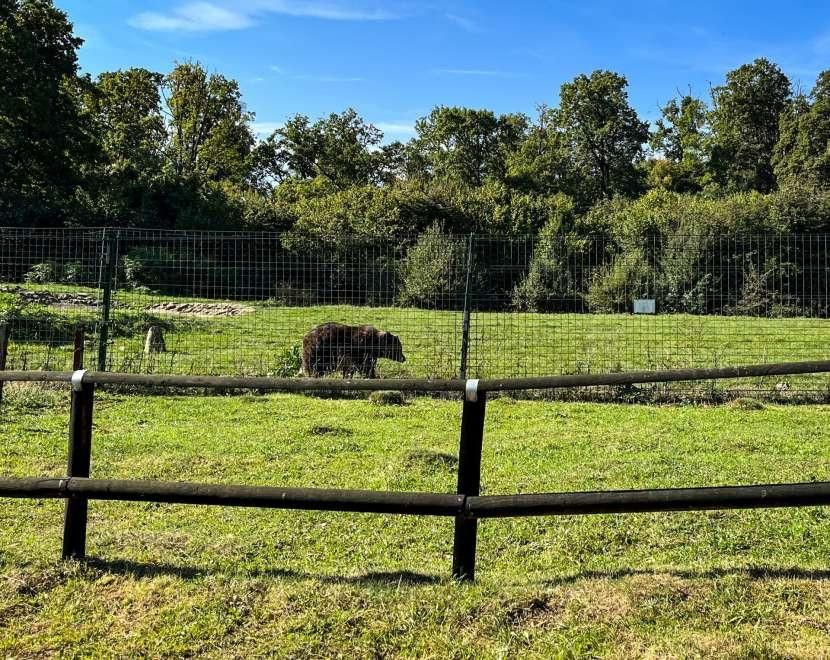
משם מסענו דרך העיירה זרנשטי (שמאוד דומב לרשנוב) למסלול הליכה נחמד Prăpăstiile Zărneștiului. בכדי להגיע למקום הנכון שימו בניווט את האתר- Fountain Botorog, מדובר על כניסה לשמורת טבע גדולה עם שפע מסלולי הליכה שונים. הכניסה לשמורה בתשלום של 10 ליי למבוגר (ילדים חינם), שילמנו ונסענו בכביש עפר עביר לכל רכב עד נקודת ההתחלה של המסלול (יהיה מחסום ששם בעצם מתחיל המסלול ולידו יש חניה קטנה לרכבים).
היופי של המסלול זה שהוא קודם כל פשוט להליכה ונוח מאוד- הליכה על שביל רחב, הוא מתחיל בנקיק בין צוקים עצומים, ממשיך ביער נחמד, וניתן ללכת עד שימאס לכם ולחזור חזרה. לקח לנו שעה וחצי לטייל, להצטלם ולאסוף מלא עלי מייפל לזר מהמם.
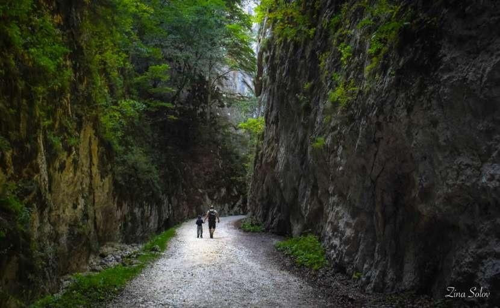
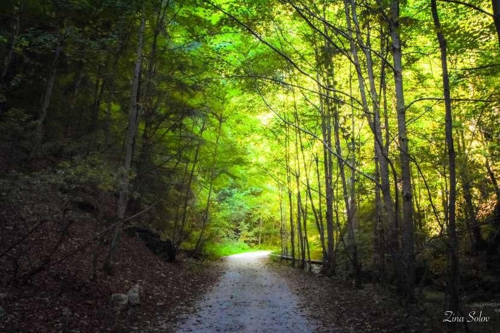
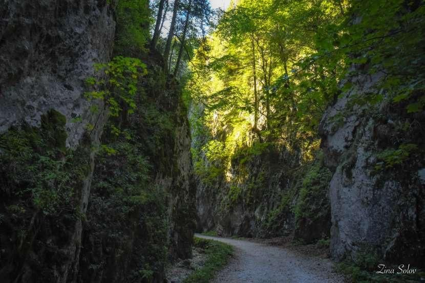
הפעם לא התכוננו לפיקניק אז היינו די רעבים והתחלנו לחשוב על מקום לאכול, מצד אחד אפשר לחזור לזרנשטי ולחפש שם משהו, או שאפשר להנות מהג׳יפ ולנסוע בדרך הג׳יפים לכפר מגורה הסמוך (לפי גוגל יש שם מסעדה), כמובן שבחרנו בטיול ג׳יפים.
הדרך לכפר מוגרה יוצאת ממש ליד החניון של השמורה, מדובר בדרך עפר די עבירה (מידי פעם יש כמה בורות), לרכב suv אין שום בעיה לנסוע שם. עולים בפיתולים פיתולים דרך היער עד שנגלה לנו מראה מדהים של הכפר!
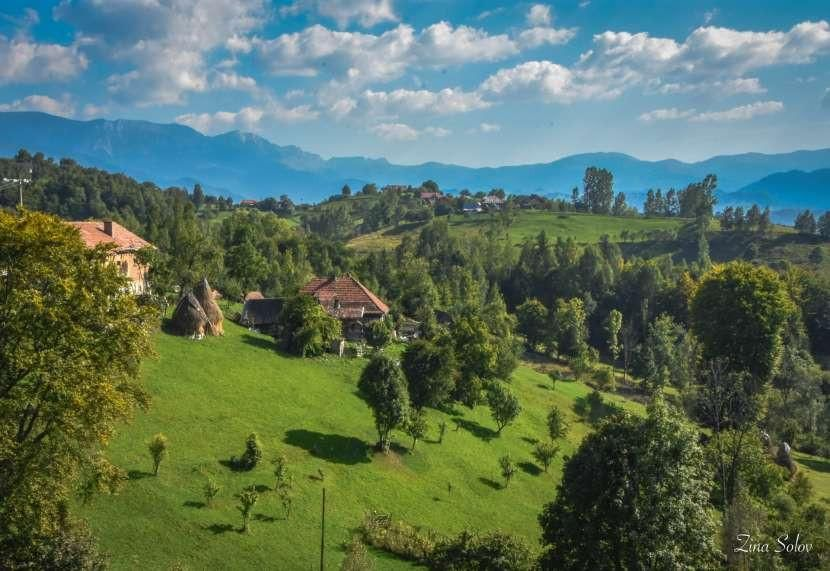
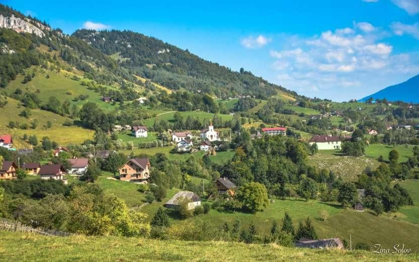
הכפר פשוט משגע, נוף גבעות ירוקות, בתים קטנים ערימות חציר ושמיים כחולים כחולים עם ענני צמר גפן- ממש מראה גלויה!ֿ
אנחנו גוועים בערב, למזלנו המסעדה היחידה בכפר עובדת, רק מה, יש לידה עבודות בניה ורעש מחריש אוזניים.
בלית ברירה נאלצנו לאכול בפנים כי פשוט אי אפשר לשבת בחוץ. התפריט די דל אבל הזמנו מרק ושניצל שבאופן מפתיע היו טעימים למדי- ממש טעם ביתי.
אחרי ששבענו טיילנו קצת בין הרחובות, יותר נכון השבילים, של הכפר וספגנו את הנוף המדהים.
החלטנו שאנחנו ממשיכים בטיול הג׳יפים שלנו ונוסעים בדרך הג׳יפים לכפר הסמוך פסטרה (אפשר להגיע לכפר גם בדרך רגילה- לרדת לכיוון בראן ולכביש ומשם לעלות לפסטרה, אבל למה שנפסיד את הכיף?). נסענו בכביש המחבר את מוגרה ופסטרה, דרך ג׳יפים משגעת, נופים מטריפים, הדרך לא קשה רק מידי פעם יש בורות ומהמורות בדרך העפר. ראינו סוסים, פרות כבשים, ערימות חציר פוטוגניות ובכלל תחושה שחזרנו בזמן לרוסיה הסובייטית ולקלחוז. אפשר להגיד שהטיול היה בשבילנו, לילדים לא היה אכפת בכלל המנוף הם היו שקועים בסרט בטאבלט (לפעמים עדיף ככה יהיה פחות בכיינות ״משעמם לי״).
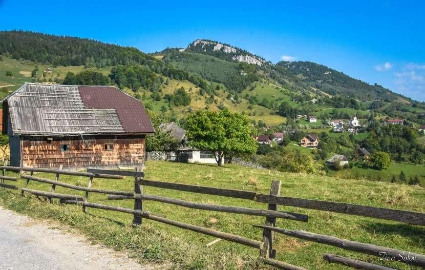
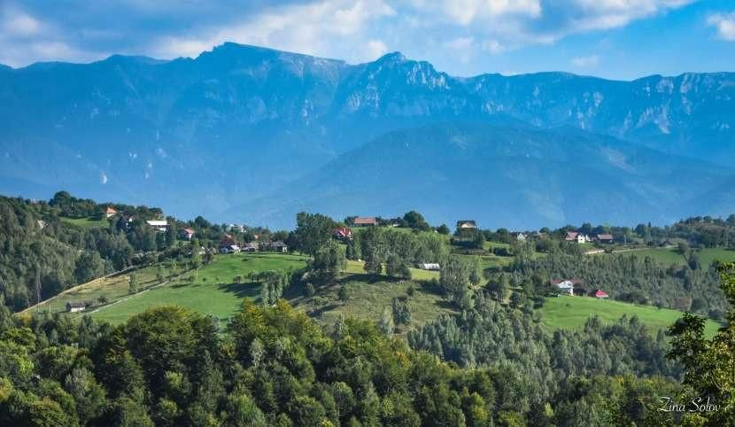
הכפר פסטרה דומה לכפר מוגרה, למי שמעוניין יש בפסטרה אומגה שנראית ממש מגניבה (800 מטר) שאפשר לעשות גם עם ילדים, רק מה, זוכרים את הסודוקו של האטרקציות שלא בעונה? האומגה סגורה בימי שלישי- והיום דווקא יום שלישי.
מפסטרה אנחנו נוסעים לבראן, הבטחנו לילדים לראות את טירת דרקולה, שוב חולפים על פני מאפיית פאננר ואני ממש מתאפקת לא לעצור לעוד קניה של עוגות אבל צריך לשמור על הגזרה לא? לא תכננו להיכנס לטירה, כי קראתי סיפורי זוועה של התורים המטורפים, הצפיפות החום והשעמום בפנים. הגענו לבראן בארבע אחה״צ, חנינו בחניון עירוני ליד הטירה והלכנו לטייל בדוכנים שבכניסה לטירה. להפתעתנו נראה היה שאין הרבה אנשים בטירה אז במהלך ספונטני קנינו כרטיסים (הילדים בחינם) ונכנסנו לסיור בטירה.
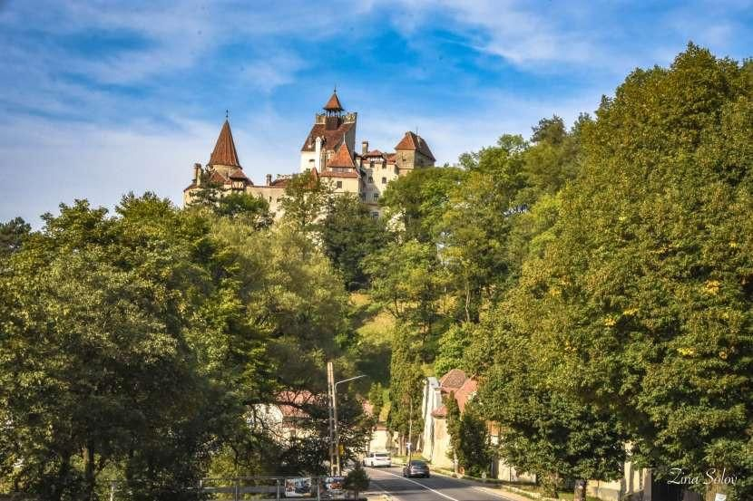
הטירה מאוד יפה, הילדים התעניינו לטייל בין החדרים והמבוכים שבה, לא נכנסנו לחלק של דרקולה כי הם קצת פחדו. אני יכולה להבין למה אסור להיכנס לטירה בקיץ כשהמקום שורץ תיירים, זו מלכודת מוות מרוב צפיפות וחום. אבל מחוץ לעונה בשעות הערב הסיור היה ממש נחמד. התלבטנו אם לחפש מסעדה לאכול באיזור בראן, אבל בסוף לא רצינו לחכות שעה ומשהו עד שיגיע האוכל (השירות ברומניה די איטי) אז החלטנו פשוט לקנות פיצה ולהכין בתנור בדירה, וזו היתה אחלה ארוחת ערב. עוד יום מוצלח הגיע לקיצו.
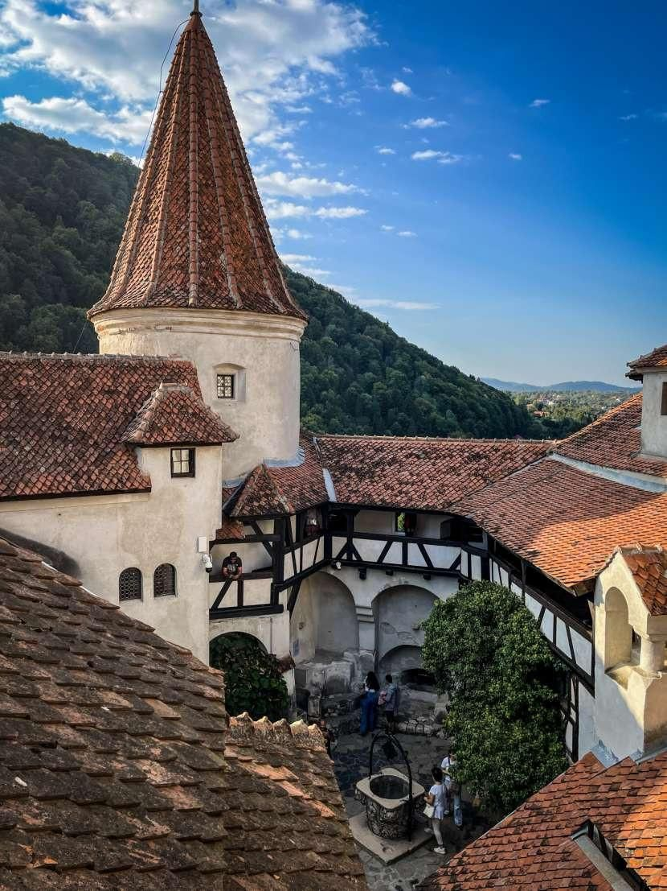
יום 7 27/9- שבע הסולמות
היום אנחנו עושים את אחד המסלולים היפים ברומניה- קניון שבע הסולמות. קראתי המון על המסלול בדגש על טיול עם ילדים בני חמש, חלק כתבו שאפשר, חלק כתבו שקשה ממש, חלק כתבו שאפשר ללכת עד האומגות וזהו, בקיצור היו דעות לכאן ולכאן. אחרי מסלול הרייקדלור באיסלנד שעשינו שנה שעברה שהיה סה״כ 8 ק״מ הליכה ועם לא מעט עליות, נראה לי אנחנו (והילדים כמובן) מסוגלים לעשות את המסלול הזה. מניסיון עבר של טיולים עם הצוציקים למדתי כמה דברים: 1. הכנה מראש, כמה שיותר לחפור להם ולהכין אותם שנעשה מסלול, שתהיה הליכה שנטפס בסולמות ולהלהיב על המסלול 2. שוחד! אין כמו שוחד בצורת ממתקים כדי לגרום להם ללכת, לשם כך בבוקר ארזנו לכל אחד בתיק כמות ממתקים וחטיפים שלא תבייש אף גזלן.
מסלול שבע הסולמות נמצא סמוך לכפר Timișu de Jos שלא רחוק מברשוב. מן הסתם היה עדיף לעשות את המסלול בימים ששהינו באיזור בושטני, אבל זה לא הסתדר בתכנון, כך שדחינו את המסלול לאמצע הטיול.
קמנו יחסית מוקדם כדי לא להתחיל את המסלול מאוחר, ארזנו כריכים, מים וכמויות של שוחד. נסיעה של 50 דקות מהדירה והגענו לתחילת המסלול- כיוונו את הנווט ל- Terasa Șapte Scări. חנינו את הרכב והתחלנו במסלול בשעה עשר בבוקר. הגענו יחסית מוקדם והיינו בין הראשונים, כך שזכינו לראות את פקחי השמורה בודקים את האומגות (למי שלא יודע, מבוגרים מגיל 18 יכולים לחזור חזרה את כל המסלול באומגות, נראה חוויה כיפית ביותר אבל קצת מאתגרת עם ילדים). המסלול מסומן בקו צהוב על רקע לבן, והסימון מעולה! עקבי ובולט לאורך כל המסלול. המסלול מתחיל בשביל רחב לאורך נחל מפכפך, ולאט לאט נכנסים אל תוך היער כאשר השביל כל הזמן עבור ליד הנחל. הלכנו בנחת ועשינו מידי פעם הפסקות שוחד, לאחר כחצי שעת הליכה הגענו לבקתת האומגות לילדים (עד 45 קילו) אולם בגלל השעה המוקדמת הבקתה היתה סגורה, ניצלנו את הזמן לעצירת פיקניק וכריך. מהבקתה השביל הופך להיות צר ועובר בתוך היער ממש, יש עליות מעת לעת אבל ממש לא קשות, למטה ממשיך לזרום הנחל וניתן לשכשך ולראות מפלונים מעת לעת.
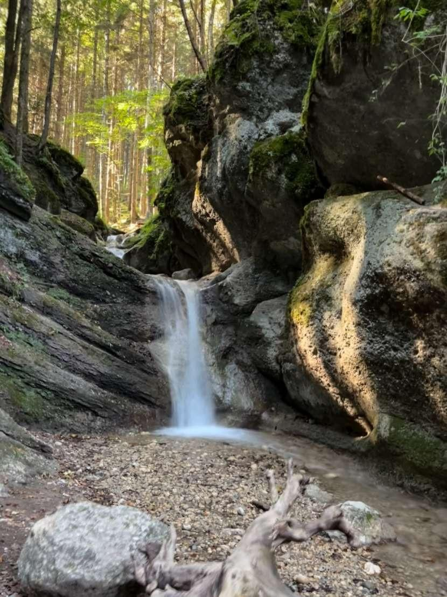
אחרי עוד כ-20 דקות הליכה עשינו עצירה ליד פלג מים לנשנוש והתרעננות ומשם עוד כרבע שעה הגענו לבקתה הראשית (כחצי שעה הליכה איטית מבקתת האומגות). מסלול הסולמות בעצם מתחיל מהבקתה הראשית, שם משלמים דמי כניסה 10 ליי למבוגר במזומן בלבד! למי שרוצה לחזור באומגות שוכר ציוד משם. שימו לב לילדים נדרשת רתמה וקסדה אותה מקבלים גם בבקתה בחינם (משאירים רק תעודה מזהה).
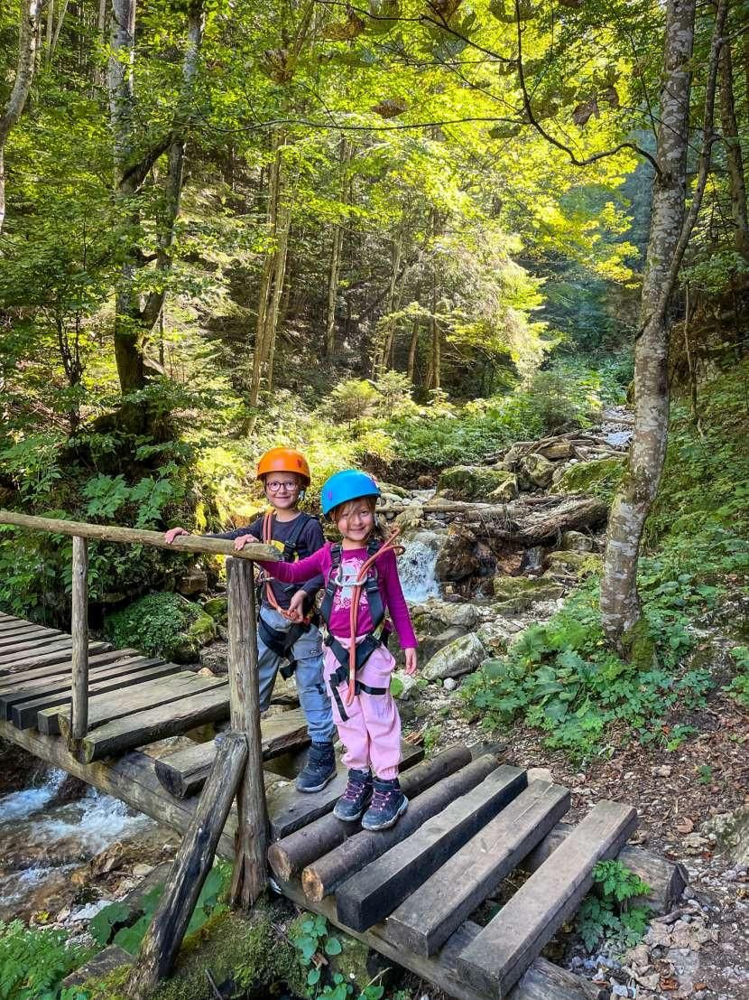
הילדים ממש מתלהבים מהריתמות והקסדות שלהם ואנחנו ממשיכים במסלול. אחרי עוד 5 דקות הגענו לסולם הראשון, צולחים אותו בלי בעיה ונכנסים לתוך הנקיק. באזור הסולמות קריר ממש ורטוב בגלל המים (לא נזקקנו לציוד מיוחד אבל כדאי לדעת ולהערך עם מעיל.כפפות). משם עולים בעוד סולמות כשהגבוה ביניהם הוא 20 מטר ובצידו מפל, חוויה מטורפת. עם כל טיפוס נגלה נוף יפה יותר מהקודם. סה״כ עברנו 7 סולמות (כשם המסלול) בגבהים שונים. לילדים לא היה קושי בכלל, להפך נהנו מכל רגע. כשעלינו יצאנו לקניון מדהים ביופיו, היינו כמעט לבד, דממה ורק שומעים את הנחל הזורם. עצרנו לנוח על בול עץ ולאכול צהריים. משם שימו לב ממשיכים במסלול האדום (עיגול אדום על רקע לבן), ניתן להמשיך במסלול הצהוב אך הוא מאריך את הדרך.
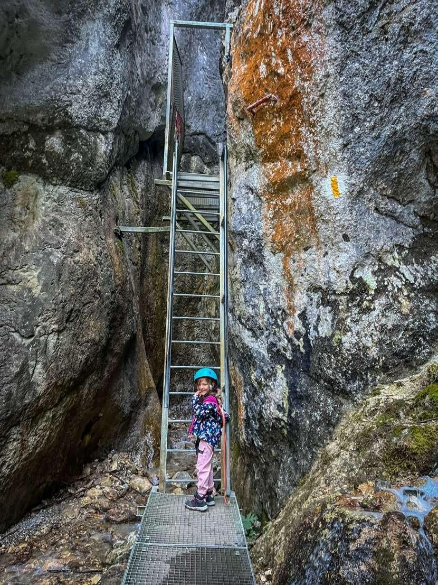
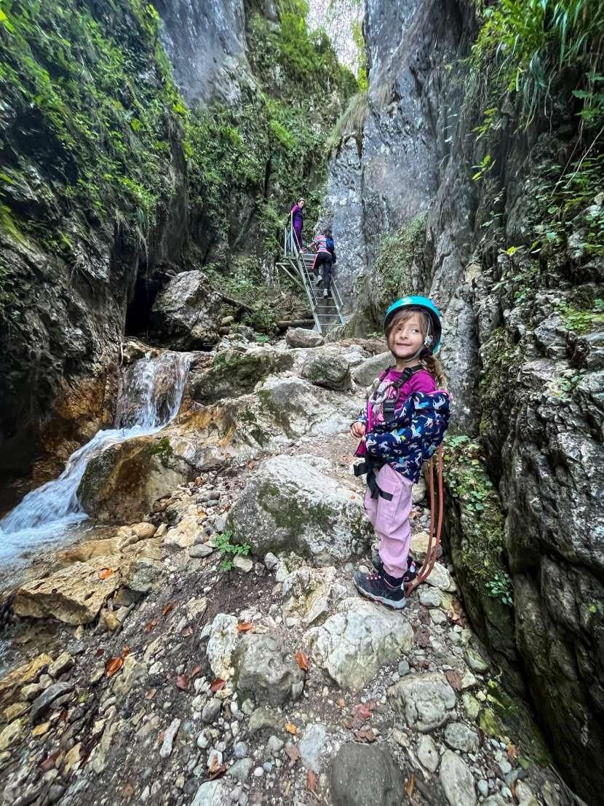
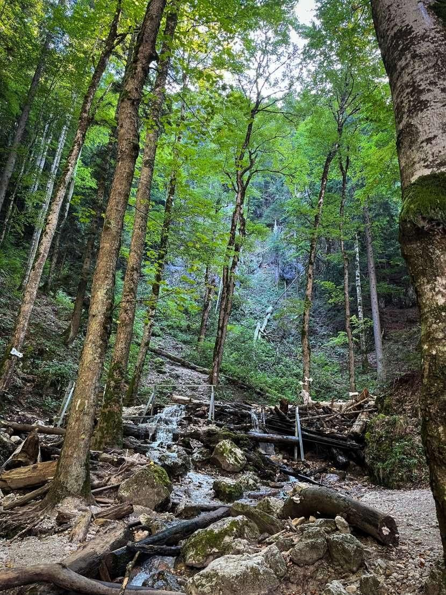
כאן לדעתי זה החלק הכי קשה במסלול, עלייה די תלולה (אבל ממש קצרה) ומשם ירידה ארוכה ארוכה (כ15-20 דקות) חזרה עד הבקתה. ליד הבקתה חיכתה לנו הפתעה בדמות שועל, שממש לא פחד מאנשים (נראה הרבה מאכילים אותו) שפשוט ישב במרחק של מטר מאיתנו וחיכה שניתן לו משהו לאכול.
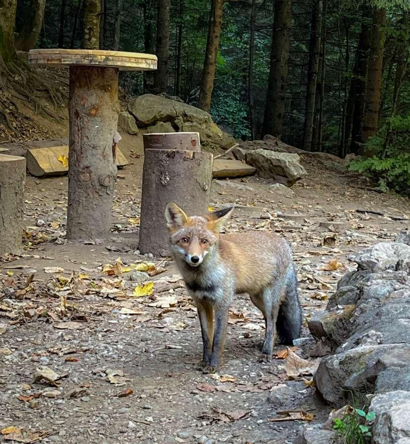
החזרנו את הציוד והתחלנו ללכת חזרה (החזור היה הרבה יותר מהר), עצרנו ליד בקתת האומגות של הילדים והצוציקים הנהו בטירוף לעשות שם אומגות מעל הנחל (יש סה״כ 4 מסלולים) עשינו את השניים הנמוכים ביותר. ומשם בהליכה איטית עד לרכב. יצאנו מהמסלול בשעה 16:00 עייפים ומרוצים. לסיכום לדעתי הקושי העיקרי של המסלול הוא האורך שלו ולא התוואי, אבל בהליכה איטית עם שוחד ועצירות הוא לגמרי עביר עם ילדים וממש ממש כיפי.
אחרי יום כזה הבטחנו לילדים עוד פינוק- בריכה! נסענו ל-Aquatic Paradise מדובר במתחם טרמה קטן ונעים, יש במקום כמה בריכות חמות כולל בריכה חמה בחוץ, יש 2 מגלשות לילדים, בדיוק מה שאנחנו צריכים להירגע מהיום הארוך הזה. עלות כניסה 190 ליי לשעתיים, מקבלים צמידים, יש לוקרים לשים את הדברים ותאי הלבשה להחליף בגדים. המקום משמעותית קטן מהטרמה ליד בוקרשט, אבל למי שנמצא בבראשוב ובא לו בריכה טרמית ומגלשות המקום ממש נחמד. בילינו שעתיים במקום, אבל צריך לחשוב על ארוחת ערב, שוב החלטנו על פיצה בתנור במקום לחפש עכשיו מסעדה, כולנו נופלים מהרגליים אחרי היום הזה.
יום 8 28/9- פארק חבלים
היום זה יום כיף לילדים. אנחנו נוסעים לפארק החבלים אוונטורה בבראשוב, כנראה זה פארק החבלים הכי מוכר בקרב הישראלים, עד כדי שיש שילוט במקום בערבית וגם הדרכה בעברית.
הפארק נפתח בעשר בבוקר ואנחנו כמובן הגענו עם הפתיחה, קונים כרטיס ל-3 שעות, לילדים קונים כרטיס לפעילות- יש מתחם לילדים מגיל 4-7, ולנו לקחנו כרטיס מלווה. הילדים מקבלים הסבר, מתנסים במסלול לדוגמא ומיד יוצאים למסלולים שלהם, יש 5 כאלה. אחרי שראינו שהם שולטים בעניינים היטב יכלנו לנוח בסבבה בזמן שהם התרוצצו בין המסלולים.
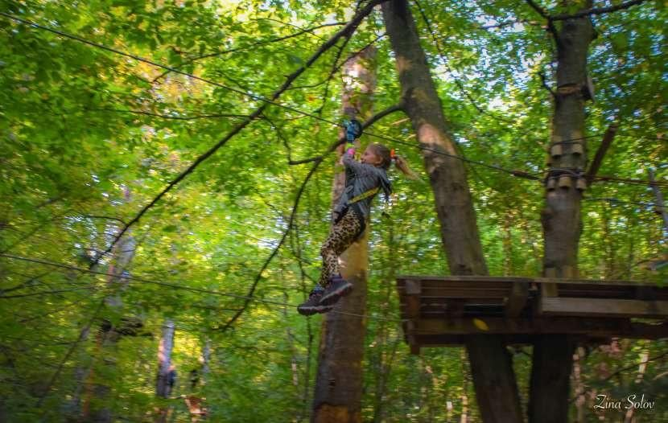
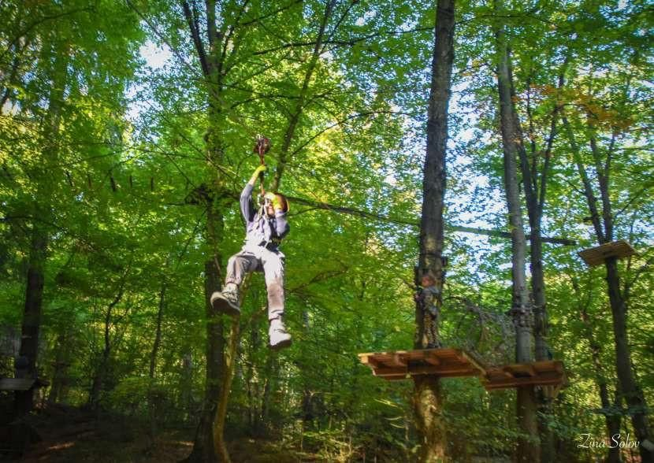
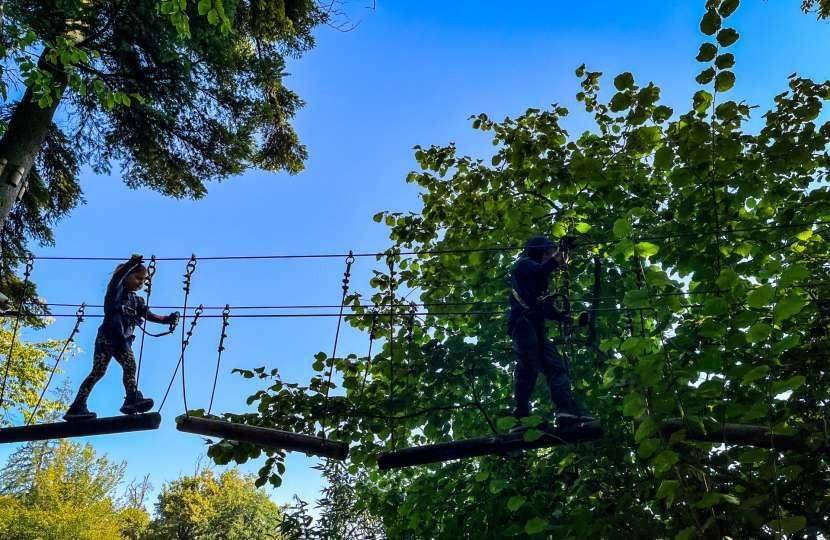
למה ששנינו נשב ונשתעמם? החלטתי לנצל את ההזדמנות וקניתי כרטיס לעצמי (בעלי החליט שהוא דווקא מעדיף לנוח בשקט), נורא רציתי לעשות את האומגה מעל האגם ובשביל זה נדרש לסיים לפחות מסלול אחד.
לגדולים מגיל 8 יש כבר מסלולים אחרים ברמות קושי שונות לפי צבעים (יש הגבלה לפי גיל למסלולים היותר קשים) בגדול זה מתחיל מצהוב (3 מסלולים), ירוק (גם 3) אדום (2) כחול ושחור (הכי אתגרי). בכדי להתחיל מסלולים צריך לעבור הדרכה מפורטת ולאחריה (כשסגורים על הציוד והפעלתו) אפשר לצאת לדרך, בכל פעם שאתם עוברים בתחנה לתחילת מסלולים ניתן לראות כמה זמן נשאר לכם (הכרטיס הוא ל-3 שעות). כאמור בכדי לעשות את האומגה על האגם צריך לסיים מסלול אחד לפחות. מחייבים גם להתחיל עם מסלול צהוב או ירוק. התחלתי מסלול צהוב מס׳2 בכדי לסיים אותו מהר, לצערי בשעות האלה כבר היו יותר אנשים ולכן גם הקצב נהיה איטי יותר כי נתקעים במסלולים ולא באמת אפשר לעקוף. מהמסלול הצהוב החלטתי שאנסה את הירוק הכי קשה (מס׳ 3) ואם יהיה קל אז אלך לכחול, אמיצה שכמוני, חייבת להגיד שאמנם הוא לא היה כזה קשה אבל גם לא כזה קל! ואיטי נורא כי כאמור אנשים לפני נתקעים ואז יש תור. לקח לי יותר חצי שעה לסיים את המסלול. בסיומו ראיתי שהצוציקים סיימו את ה-3 שעות שלהם, זה הזמן ללכת לאומגה מעל האגם, חוויה כיפית לגמרי! לא נשארתי לסיים את ה-3 שעות שלי כי הילדים מיצו ולא רציתי להתעלל בבעל שיבדר אותם במשך עוד שעה וחצי. הלכנו לטייל קצת לאגם שנמצא ליד, יש שם גינת שעשועים שהעסיקה אותם עוד טיפה.
משם תכננתי לנסוע לעיר העתיקה של ברשוב ולטייל שם אולם בעלי הטיל וטו (הוא שונא ערים) והיה גם ממש חם. חישוב מסלול מחדש והחלטנו לנסוע לפויאנה ברשוב, לא תכננתי לעשות שם שום דבר מיוחד אבל קראתי שיש שם אחלה מסעדות וזו כבר שעת צהריים.
עשרים דקות מבראשוב נמצאת פויאנה ברשוב, עיירת סקי מקסימה. שימו לב שאין בתי מגורים בפויאנה, רק מלונות וריזורטים לסקי. מחוץ לעונה (לא קיץ ולא חורף) העיירה ממש מנומנמת. ניתן לצאת משם לטיולי סוסים וטרקטורונים או סתם לטייל ביערות המקסימים. חנינו ליד המסעדה Miorița, מסעדה ענקית ומהממת, עיצוב משגע והכי חשוב האוכל פשוט מעולה! המסעדה לא זולה (בלשון המעטה- ביחס למסעדות ברמוניה) אבל האוכל הטעים כל כך, מצדיק את המחיר בעיני, זו המסעדה היחידה ברומניה שממש נהננו מהאוכל (למרות השירות האיטי).
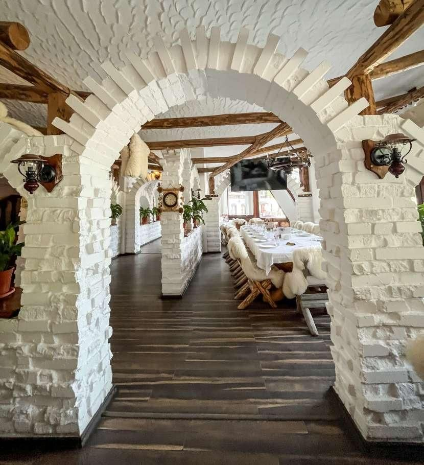
שבעים טיילנו קצת במדרחוב של העיירה, אולם כמו שכתבתי העיירה ממש מנומנמת עכשיו אפילו רכבלי הסקי לא פועלים (בגלל אמצע שבוע). החלטנו לחזור לשם לחופשת סקי מתישהו כי באמת העיירה נראית מקסימה.
משם נסענו לכיוון הדירה ברשנוב, דרך יערות משגעים ושפע מסלולי הליכה אולם היינו כבר עייפים ולא עצרנו. ממש ליד רשנוב והדינופארק יש מסלול למערה- Peștera Valea Cetății שלפי הביקורות נראה מסלול יפה ממש, אולם כאמור היינו עייפים ולא עצרנו (נשמור גם לפעם הבאה).
חזרנו לדירה לקראת חמש וחצי בערב, והחלטנו לנוח בדירה, מחר קמים מוקדם ועוזבים אז ניצלנו את הזמן לארגן את הדברים ופשוט לנוח.
יום 9 29/9- דגים דגים
היום אנחנו עוזבים את הדירה המדהימה שלנו, אחרי שהות של 5 לילות ושמים פעמינו לכיוון כביש הטרנספרגרשן. רוב המטיילים מגיעים לסיביו לשהות של כמה ימים ומשם דרך הכביש חוזרים לכיוון בוקרשט. בהתחלה גם אני רציתי לשהות בסיביו 2 לילות (כי זה הזמן שיש לנו) אבל כשראיתי שמסיביו לכביש הטרנס (מקצרת את השם הארוך ברשותכם) יש עוד כשעה וחצי נסיעה העדפתי לוותר על לינה בסיביו ולחפש משהו קרוב יותר לכביש, פשוט כדי לצמצם זמן נסיעה. לאחר חיפוש ארוך של מקומות לינה טובים שיהיו קרובים לכביש וגם לא רחוקים מסיביו (כי תכננתי להגיע לפארק אסטרה) מצאנו וילה מהממת בעיירה פרומבקאו דה סוס (Porumbacu de Sus)- עליה אפרט בהמשך.
הנסיעה מרשנוב לפרומבקאו אורכת כשעתיים וקצת, לקחנו את הזמן בבוקר להתארגן בנינוחות ויצאנו לקראת עשר. הנסיעה עוברת דרך כפרים רומניים אותנטיים ודרך כלכך הרבה שדות תירס שחשבתי לרגע אני בקנזס (זה מסביר למה בכל מקום מוכרים תירס). תכננתי להגיע לקראת הצהריים לחוות הדגים אלבוטה, גם כדי לדוג (בעלי חובב דייג מושבע) וגם כדי לאכול צהריים, 2 ציפורים במכה.
חוות אלבוטה היא חוות פורלים אבל לא רק, יש במקום גם מלון, גינת ירק אורגנית בריכות דגים לדיג מסעדה ועוד ועוד. בקבלה הפנו אותנו לבריכות הדגים ושם יש נציג ממנו שוכרים חכה בעלות של 10 ליי, חייבים לקחת את הדגים שדגתם במחיר של 35 ליי לקילו.
הבריכות מלאות דגים ואחרי שפשוף קל הצלחנו לתפוס את הדג הראשון, החלטנו שאנחנו תופסים רק 4 כי באמת אין צורך בכלכך הרבה (4 מספיק לארוחת ערב מעולה). גם הצוציקים נהנו לנסות לדוג ועוד יותר נהנו מהשלל. שילמנו על הדגים, לצערי אין להם אפשרות להכין את השלל (זה שירות רק לאורחי המלון) אז שלימנו על הדגים והלכנו למסעדה לארוחת צהריים דגים סטייל, היה לא רע (טיפ- במקום שמתמחה בגדים אל תזמינו בשר, בעלי הזמין סטייק והמנה היתה נפילה).
לוילה שלנו בפרומבקאו הגענו לקראת 3 אחה״צ. הוילה נקראת Linistea Muntilor Chalet- נמצאת בכפר Porumbacu de Sus, כ-20 דקות מכביש ה-Transfăgărășan. מדובר במתחם ענקי עם 3 אגמים מלאכותיים, שדות, מתקני בישול, ברביקיו ופינות אכילה שפזורות בחוץ ליד מתקני ברביקיו. יש במקום 3 יחידות- יחידה לזוג, בית עם 2 חדרי שינה ובית עם 3 חדרי שינה שבו התאכסנו.
הבית ענקי, 3 חדרי שינה עם נוף משגע על האגם, למעלה עליית גג שיכולה להכיל עוד 6 ילדים- בעצם משמשת גם כחדר משחקים ומרפסת מדהימה. חבל רק שהבעלים בקושי דובר אנגלית. אנחנו מיד משחררים את הצוציקים לחקור את השטח בעוד אני מיד שמה מכונת כביסה (הצטבר המון), בעלי ישר מצא את מתחם המנגל והטאבון וכבר מחכה בכיליון עיניים להכין את הדגים.
במקור תכננתי להמשיך לפארק 12 החודשים וטירת החימר שנמצאים ממש 5 דקות משם, אבל כולנו כלכך התלהבנו מהשקט והשלווה בוילה ומהמקום עצמו שפשוט החלטנו לעשות צהריים פנוי ולנוח בוילה. קפצנו לכפר למינימרקט הפצפון להצטייד במצרכים, תכינו את הגוגל טרנסלייט כי כדי לקנות חלב, חמאה וביצים (שנמכרים ביחידות) צריך לתרגם להם כי אף אחד אבל אף אחד לא מבין שם אנגלית. אגב במקום יש אוכלוסיית צוענים ממש גדולה.
טיילנו קצת מסביב לוילה, ראינו כבשים בשדות, וחזרנו להתפאנן בוילה מול האגם. ארוחת הערב היתה מושלמת, דגים על האש! והשיא היה לראות את הירח המלא זורח מעל האגם. אמנם לא שינו הרבה היום אבל עדיין היה יום מעולה!
יום 10 30/9- שעשועי ילדים
חדר השינה שלנו יוצא אל האגם לצד המזרחי, כשהתעוררתי בשש וחצי בבוקר הצצתי בחלון וזכיתי לראות זריחה מדהימה!
תכננתי היום לנסוע למוזיאון אסטרה ואולי לטייל קצת בסיביו, אבל הבעל דווקא רצה יום יותר רגוע ופחות נסיעות, לכן מיד תכננתי לנו תוכנית חלופית להיום- להשלים את מה שפספסנו אתמול: פארק 12 החודשים וטירת החימר, ומשם לטייל בפארק ברמבורה והבית ההפוך שנמצא לא רחוק, אמנם לא אטרקציות מטורפות אבל הכל קרוב מאוד לדירה.
פארק 12 החודשים (Povestea Calendarului) נפתח בתשע בבוקר, במקום יש שפע חניה, חנינו בחניון העליון זה שבין הפארק לטירת החימר היה בחינם. היום יום שבת אז גם המוני רומנים גודשים את הפארקים כך שטוב שהגענו מוקדם.
הפארק בעצם מוקדש ל-12 חודשי השנה, יש ביתן מיוחד עבור כל חודש וסיפור על כל אח שנה (שהם 12 החודשים). עלות כניסה 80 ליי (לארבעתנו). בכל ביתן כזה יש משהו מיוחד שמאפיין את החודש, המקום מאוד ציורי ופוטוגני, יש גם שפע פינות משחק, חץ וקשת וכו. החסרון בעיני שהרבה מהאטרקציות שם הן בתשלום נוסף- למשל רכבת עוד 10 ליי לילד (על סיבוב של 2 דקות בלחץ), שייט אבובים כנ״ל- בכלל שמתי לב שבהרבה פארקים ברומניה, מעבר למחיר הכניסה יש עוד מלא אטרקציות שדורשות תשלום נוסף עבור משהו, קצת מוריד בעיני, מרגיש כמו מסחטת כסף של קהל שבוי (כבר עדיף שתגבו יותר בכניסה ותכלילו את כל האטרקציות). עוד חסרון בעיני שחלק מהביתנים בעצם ״חנויות״- הביתן של חודש ינואר זה חנות ממתקים, הביתן של חודש יוני זה חנות מזכרות, שוב זה נחמד אבל בעיני יצר ממש רושם של לקנות ולקנות במקום דווקא לתת לילדים השראה לא דרך ״קניה של משהו״. כמובן שהיו ביתנים של פעילות- חודש אפריל כלל מלא משחקי שולחן חמודים, חודש יולי היה סדנת יצירה כיפית (פיצקה הכינה ציור ממש יפה), ביתן חודש אוקטובר מוקדש להאלווין וממש מפחיד (לפי המפעילים לא לגילאים של הילדים שלנו שגם קצת חששו להיכנס). הקדשנו למקום כשעה וחצי (אפשר גם פחות). לסיכום- מקום חביב עם ילדים קטנים, לגדולים יותר לדעתי יהיה משעמם.
משם המשכנו לטירת החימר או טירת הפיות (Castelul de Lut Valea Zânelor) מדובר במלון יפה שנבנה אבל לא אויש וכיום משמש יותר כסט צילומים אינסטגרמי. חוץ מהמבנה היפה במקום יש כמה דוכנים ופינות ישיבה וגישה לנהר. כניסה עלתה לנו 30 ליי, די מיותרים אני חייבת לציין, אם לא בא לכם להצטלם או לאכול נקניקיה מול נוף המבנה, אין מה לעשות שם בכלל.
סיימנו לקראת השעה 12 והדוכנים בסביבה התחילו להתמלא- גם כמות האנשים גדלה (כמו שאמרתי רומנים אוהבים לטייל בסופ״ש). התלבטנו אם לאכול צהריים באחת המסעדות המאולתרות האלה או לחפש משהו יותר ״מסעדתי״, נסענו לכיוון העיירה אבריג- Avrig, מצאתי איזה פרסום על חווה ליד עם מסעדה נחמדה, את החווה מצאנו, את המסעדה לא. בסוף עצרנו במסעדה על הדרך ממש מול העיירה, אין לי משהו טוב או רע להגיד- היה אכיל וסביר.
משם המשכנו לכיוון הבית ההפוך ופארק ברמבורה. לפי גוגל לא נראה שיש שם משהו מיוחד, אבל אולי כי היום זה שבת המקום הומה מקומיים. ליד הפארק יש חניה ענקית, משלמים עלות כניסה (120 ליי לארבעתנו) הכוללות את הבית ההפוך ורכיבה על אלפקות- שלא עשינו, אבל לפחות הפעם הם ציינו מראש מה זה כולל בלי הפתעות בהמשך.
המקום די גדול, יש את הבית ההפוך, גינת בירה ענקית למנוחת המבוגרים, מגלשות אבובים, מתנפחים ועוד, החיסרון- אין כמעט צל וממש חם היום.
התחלנו את הסיור בבית ההפוך שהוא גימיק ממש נחמד, הילדים ממש התלהבו להצטלם בחדרים ההפוכים. משם הלכנו לאבובים, עלות 10 ליי לילד לסיבוב, אפשר לקנות כרטיסיה של 10 סיבובים ב-60 ליי. לוקחים אבוב ועולים עם הדרגנוע עד לפסגה ומשם גולשים למטה- איזה כיף חיים.
אחרי כמה סיבובים הצוציקים החליטו לשחק קצת בגינת שעשועים עם חול ומתקני טרקטורים, ומשם הלכנו למתנפחים (בעלות נוספת של 15 ליי לילד, לפחות ללא הגבלת זמן). בזמן שהם השתוללו מצאנו לנו 2 כסאות נוח שהיו פזורים במקום וחיכינו בסבלנות עם כוס בירה, כמו שכתבתי היה חם ולא היה צל, זה החסרון היחיד של המקום.
לקראת חמש הצלחנו להוציא אותם משם וחזרנו לוילה שלנו, לא לפני שהצטיידנו בפיצה בסניף לידל בעיירה אבריג. כל האיזור הזה די נידח אז לא התחשק לנו לחפש עוד מסעדות לארוחת ערב.
בדיעבד לא יודעת אם עדיף היה לנסוע לסיביו ולאסטרה אבל הילדים נהנו, אולי לילדים גדולים יותר זה פחות מתאים, מצד שני בעלי זכה ביום מנוחה והיום הוגדר כהצלחה!ֿ
יום 11 1/10- לאן נעלמו כל הדובים?
היום עוזבים את הוילה המאוד נוחה שלנו, חבל שלא יכולנו להישאר שם יותר, ונוסעים לאטרקציה המפורסמת של רומניה- כביש הטראנספגרשן. אחת הסיבות לשהותנו דווקא בפרומבקאו זה הקרבה לכביש בכדי שנוכל להתחיל אותו בשעה מוקדמת יחסית, היום גם יום ראשון והכביש לרוב עמוס יותר מבשאר ימות השבוע.
קצת מידע על הכביש מתוך ויקיפדיה: הטראנספגרשאן (ברומנית: Transfăgărășan) או כביש DN7C, מכונה גם "הדרך לשמיים", הוא כביש החוצה את חלקו הדרומי של רכס הרי הקרפטים שברומניה ונחשב לאחד הכבישים היפים באירופה ובעולם. הוא הכביש השני הגבוה ביותר ברומניה, אחרי הטראנסאלפינה.
הכביש נבנה בין השנים 1970 עד 1974 בעקבות החלטה של ניקולאה צ'אושסקו, השליט השני של רומניה הקומוניסטית, בעקבות הפלישה הסובייטית לצ'כוסלובקיה, שהתרחשה ב-21 באוגוסט 1968. זאת על מנת לאפשר מעבר מהיר של כוחות צבאיים דרך ההרים; עד אז הכבישים שחצו את הרי הקרפטים היו DN1 ו-DN67C, שנבנו בתחילת תקופת הקומוניזם ברומניה. הכבישים נבנו על נחלים שקל היה לסובייטים לחסום ולתקוף. בהתאם לכך הורה צ'אושסקו לסלול כביש, שיחצה את הרי פגראש. הכביש נסלל בעיקר על ידי כוחות צבאיים וצרך פועלים ומשאבים כספיים רבים. העבודות כללו שימוש ב-6 מיליון טון דינמיט, עבודה בגובה של מעל 2,000 מטר ובאקלים אלפיני קשה. על פי רומניה, במהלך הסלילה נהרגו 40 איש, אך מדיווחים לא רשמיים המספר עומד על מאות פועלים. הכביש נפתח ב-20 בספטמבר 1974 אך בפועל עבודות עליו נמשכו עד 1980.
אחרי כחצי שעת נסיעה אנחנו מתקרבים להרים ומתחילים לטפס בפיתולים המיוערים של הכביש, העצירה הראשונה שלנו היא מפל בליאה. חונים ליד הדוכנים (שם גם יוצא הרכבל שאגם בליאה, בחורף זו הנקודה האחרונה שניתן להגיע אליה כי שאר הכביש סגור). המסלול יוצא ממש מאחורי הדוכנים, סימון של נקודה אדומה על רקע לבן, המסלול בעליה ומלא בחלוקי נחל כך שהוא לא קליל, התחלנו לעלות, הכל ירוק מסביב, יערות ירוקים המון מים ושקט מופתי (בגלל השעה היינו לבד), אני והבן נורא רצינו לעשות את המסלול עד הסוף אבל פיצקה ממש קיטרה והבעל ויתר לה, קצת חששתי ללכת לבד עם הילד, בכל זאת אזהרות מפני דובים בכל מקום, אז עלינו עוד טיפה ובסוף ויתרנו, שוטטנו קצת ביער ובין פלגי המים שבשפע במקום, בדיעבד חבל כי מדובר במפל ממש מרשים. ראינו את הרכבל לאגם בליאה יותא, מדובר באותו הדגם כמו הרכבל בבושטני- קרון תלוי מעל תהום, רק לראות את הגובה שהרכבל עולה עשה לי פחד גבהים. ירדנו לעשות סיבוב בדוכנים הרבים, יש שם מכל טוב- נקניקים ונקניקיות, בשר מתבשל על האש, שפע גבינות, ריבות פירות וכמובן מזכרות. הצטיידנו בנקניקים וגבינות ומזכרות והמשכנו בדרכנו.
עולים יותר ויותר גבוה, בכל מקום יש מפרצים לעצירה, וגם אם אין, אנשים פשוט עוצרים. בנקודה אחת ירדתי לצלם ורק מלהביט למטה קיבלתי סחרחורת מכל היער הזה הרחק הרחק מתחתי. אחרי עוד כמה פיתולים הגענו להתחלה של מפל בליאה- לא רואים את המפל עצמו, רק חלקים ממנו והוא גבוהה, ממש גבוהה, תחנת הרכבל נראית כמו נקודה קטנה אי שם למטה.
עברנו את קו העצים ומתחילים פיתולי הסלאלום עד הפסגה- אגם בליאה, הנוף מטורף! היינו בכמה כבישים יפים בעולם- כולל בנורבגיה, והכביש הזה לגמרי בטופ 10! פתאום אנחנו רואים את קרון הרכבל תלוי לו באוויר כנקודה קטנטנה, באמת שלא הייתי מוכנה לעלות ברכבל הזה, נראה פחד אלוהים.
משם הגענו לאגם בליאה, ה-אטרקציה בכביש. כמובן שגם סביבו יש עיר דוכנים ענקית מכל טוב, הרומנים לפחות הסדירו מגרש חניה ענקי בתשלום, שלא מונע מההמונים לחנות לצידי הכביש ולייצר פקק ענקי של רכבים ואנשים שמטיילים בין הדוכנים. יש במקום גם שירותים בתשלום של 2 ליי ו-3 מסעדות, למעט דוכני האוכל כמובן. ירדנו לאגם, שנראה כחול באור השמש, טיילנו סביבו, תצפתנו על הכביש וטיילנו עד למסעדה המרוחקת יותר- Cabana Bâlea Lac (שקרובה לשביל העליה לאגם קפרה שנמצא מעל, לשם כמובן לא עלינו עם הילדים).
במסעדה היה אוכל סביר, השירות היה איטי כל כך שממש שברו את שיא האיטיות ברומניה! כשיצאנו מהמסעדה (אחרי כמעט שעתיים) כל הנוף השתנה, ענן התיישב על הפסגה וכל האגם נצבע צבעי חורף, המים הכפו ירוקים אפורים על רקע שמים לבנים וערפל, לדעתי האגם ככה הרבה יותר יפה ומיוחד.
חזרנו לרכב להמשך הנסיעה, נכנסנו למנהרה של הכביש והגחנו בצד השני ליד מפל קפרה הענקי, הענן זז הצידה והקיץ חזר, הנוף ממשיך להיות משגע! יורדים בעוד סלאלומים עד שהגענו לקו העצים. בכל מקום אגב משפחות עושות פיקניקים- כל פינה ירוקה תפוסה.
מכאן מתחיל החלק של הדובים, המקום מוקף יערות והרבה פעמים רואים דובים אפילו על הכביש, כמובן שעם המזל שלי לא היה אפילו לא דב אחד!
עצרנו גם אנחנו להפוגה קטנה של נשנושי חטיף וגבינה שקנינו מול אגם וידרארו, עוד טיפה ומגיעים למלון, אני עדיין מקוה לראות דב, אפילו ממרחק אבל אין לי מזל!
הגענו למלון פוסאדה וידרארו, הממוקם בלב יער 3 דקות נסיעה לסכר וידרארו, ממנו נשקף נוף משגע של היערות והאגם. הזמנו חדר משפחתי שכלל סלון עם מיטה נפתחת, מתאימה לילד אחד או 2 ילדים קטנים שישנו אחד בראש ואחד ברגליים, וחדר שינה עם מיטה זוגית. במקום יש בריכה וספא והוא מצויין למי שלא רוצים לנהוג הרבה אלא לפצל מעט את הנסיעה ולנוח. אם אתם לא בקטע של מנוחה ואתם עם ילדים תסעו הלאה, יש הרבה דירות מרווחות וזולות יותר.
שמנו את הדברים בחדר וירדנו לרציף של האגם, לטייל טיפה ולחלוץ רגליים, לצערי העונה זו אין הפלגות באגם (לא מהמלון לפחות) אז ישבנו בכיף על המזח עד שהגיע תייר איטלקי שהחליט לצאת לשחיה באגם, הוא גם סיפר שנסע מסיביו באופניים עד לכאן וסיפר שפגש דב ממש פה ליד הסכר לפני כמה דקות. אוף עוד מלח על הפצעים, עוד התלבטתי אם לנסוע את ה-3 דקות לסגר ולקוות שהדב יהיה שם אבל הוטל וטו קולקטיבי ועלתה דרישה מיידית לבריכה.
את השעתיים הבאות העברנו בכיף בספא הנחמד של המלון, הבריכה נחמדה ממש, ישבנו בסאונה, בג/קוזי. משם אחרי מקלחת לארוחת ערב פשוטה במסעדת המלון, ועוד יום מוצלח אם כי קצת מבאס בגלל הדובים הגיע לקיצו.
יום 12- 2/10- קצת טרמה לפני שנגמר
היום תכלס הוא היום האחרון שלנו לטיול ברומניה, מחר על הבוקר טסים. אחרי ארוחת בוקר פשוטה מאוד במלון (לפחות היה קורנפלקס לילדים), נסענו לסכר וידרארו, הייתה לי תקווה שאולי מוקדם בבוקר נראה דובים אבל כלום, רק כלבים משוטטים. הסכר מרשים, ממש ענקי, אבל חוץ מלעמוד שם כמה דקות ולהסתכל אין מה לעשות. משם התחלנו את הסניעה הארוכה והמייגעת חזרה לבוקרשט, כמו כולם עצרנו לשניה להסתכל על המנזר ב-Curtea de Arges, אף אחד אפילו לא רצה לצאת מהרכב, משם המשכנו בניסעה די משעממת של כ-3 שעות, כמובן היו גם פקקים ליד בוקרשט והשיא היה כשעגלות סוסים חלפו על פנינו בכביש המהיר. עצרנו לשירותים בתחנת דלק בפאתי בוקרשט רק כדי לגלות שם שירותי בול פגיעה.
לתרמה הגענו בסביבות אחת בצהריים. התרמה הוא מתחם ענקי של כמה חללים, יש מתחם גלקסי- רלוונטי למי שמגיע עם ילדים, 2 המתחמים האחרים למבוגרים בלבד. משלמים כניסה (יש הנחיות כיצד להגיע- להביא אתכם מגבת בגד ים וכפכפים בתיק, בפועל לא בדקו אף אחד) ונכנסים למתחם ההלבשה, יש לוקרים הנפתחים עם צמיד שדרכו גם משלמים בברים ובמסעדות. מתחם הגלקסי ענקי, יש בריכת גלים, בריכה חמה בחוץ, וכמובן שפע מגלשות לגילאים שונים. טבלנו קצת, אכלנו צהרים במסעדה במקום- האוכל לא רע אבל ממש יקר ביחס למחירים ברומניה, אחר כך עוד בריכה ועוד מגלשות, מיצים בבאר בחוץ, וכך העברנו את הזמן עד ארבע אחה״צ.
עד שיצאנו והתארגנו כבר היה חמש בערב, מתחם התרמה מאוד קרוב לשדה התעופה ולדירה שלנו- גם הפעם ישנים במתחם הדירות airport residence, נסענו לתדלק ולשטוף את הרכב, קנינו עוד פיצה לתנור לארוחת ערב ומשם לדירה.
La Maison de Zoe - Airport Residences- אותו מתחם של דירות ליד שדה התעופה כמו ביום הראשון, הפעם הדירה בבלוק 2, ויש סלון עם ספה נפתחת וחדר עם מיטה זוגית, שוב פתרון מעולה ללילה אחרון למי שלא רוצה לנהוג מבוקרשט.
זהו כך נגמר לו הטיול שלנו, מחר קמים לטיסת בוקר וחוזרים לארץ.
ואם הגעתם עד כאן, הנה סיכום קצר בכמה מילים של רשמי הטיול:
רומניה היא מדינה מאוד יפה ומיוחדת (לא אוסטריה או שוויץ אבל בכל זאת היערות ברמוניה מדהימים), מצד שני רואים שמדובר במדינה מזרח אירופאית עם שרידי קומוניזם: המון זבל בטבע, מעשנים בכל מקום, בתים מוזנחים, ילדים נוהגים בכרכרות סוסים מעבירים מלט או חציר, מדרכות זו מילה גסה כנראה כי אין ואם במקרה הם כן קיימות הן כלכך צרות שבקושי אפשר לעבור. אבל הטבע משגע, אוויר נקי ומעניין לראות את החקלאות בכפרים. היה לנו טיול מדהים, הילדים נהנו מאוד וגם אנחנו, יש בה שילוב נכון של טבע ואטרקציות לילדים כך שנהנים משני העולמות.
עוד כמה דברים כלליים:
- סל הקניות ברומניה זול מאוד, ממליצה מאוד להצטייד בסופר ולבשל, רוב הדירות מאובזרות מצויין. היינו אוכלים ארוחה אחת במסעדה ובוקר וערב היינו מכינים לבד בדירה.
- מסעדות- זולות יותר מהארץ אבל לא כאלה זולות כמו שחושבים, האוכל סביר, יש מקומות שטעים יותר ויש פחות. הכי אהבנו את המסעדה- Mioriţa בפויאנה ברשוב, לא זולה, אבל כל מנה יותר טעימה מקודמתה.
- כסף- ברוב המקומות מקבלים אשראי (לא מקבלים אמריקן אקספרס), כדאי להביא גם מזומן לתשלום בדוכנים וחניות. הזמנו 1000 ליי דרך fly money וזה הספיק לנו לכל הטיול.
- אטרקציות- יש לא מעט, רכבלים, מגלשות הרים, פארקי שעשועים, פארקי חבלים, פארקי דינוזאורים, בריכות ומה לא. אבל הן לא זולות כמו שחושבים. רכבלים למשל- סיניאה עלינו לגובה 1400 שילמנו 60 ליי למבוגר ו-40 לילד. הרכבל בבושטני ממש יקר- 190 ליי למבוגר הלוך חזור. בהרבה פארקים משלמים כניסה (סביב 100-190 ליי) ואז יש מתקנים שעליהם תשלום נפרד של עוד 10-15 ליי לילד לסיבוב.
- חניה- כמעט בכל מקום גובים חניה, החל מכמה ליי בודדים לשעה בחניוני הערים ועד ל8-10 ליי לרכב במקומות מתויירים (דינופארק למשל).
- גם בחודש ספטמבר הרגשנו עומסי תנועה בעיקר בסופי שבוע. אולי כי ״נפלנו״ על הפסטיבל שהתקיים ב-22-24.9, אבל גם בסופ״ש לאחר מכן הורגשה תנועה ערה בכבישים ובאטרקציות. באמצע שבוע היו מקומות ממש נטושים- למשל מגלשת ההרים בפונדטה היתה שוממת.
- יש עדיין מקומות עם שירותי בול פגיעה (פארק אוונטורה, תחנות דלק מסוימות), אל תהיו בהלם אם תראו.
- אל תופתעו אם תראו כרכרה עם סוסים בכבישים מהירים.
- כבישים ופקקים: תהיו בטוחים שיהיה תמיד איזשהו כביש בשיפוץ ותתכוננו לפקק.
- דובים- יש דובים ביערות סביב, למרות שאנחנו כנראה היחידים שלא זכו לראות דובים בכביש הטרנספגרשן.
- לא נתקלנו בתורים למתקנים או לאטרקציות, זה היתרון לנסוע שלא בעונה. מצד שני קשה לתכנן אטרקציות כי חלק פותחים רק בחמישי עד ראשון, חלק סגורים בראשון, הרוב סגורים בשני יש כמה סגורים דווקא בשלישי ולכו תפתרו את הסודוקו הזה.
- מזג אוויר- קריר בבוקר, חם ביום, קפוא בלילה. להתלבש בשכבות, ג׳קט לבוקר, צהריים מכנס ארוך דק וחולצה קצרה, מעיל או פליז חם בערב אם נמצאים בחוץ. עדיין לא כל בעלי הדירה מדליקים חימום, תסתפקו במזגן אם יש (על חום).
- הרומנים דווקא הפתיעו לטובה בסימון מסלולים- ברור ובולט בכל מסלול שעשינו.
- אנגלית זו הנקודה החלשה שלהם, תכינו את הגוגל טרנסלייט. גם שילוט באנגלית ממש לוקה בחסר. מצד שני תמצאו בטרמה ופארק אוונטורה אפילו שילוט בעברית.
- בשדה התעופה ליד דוכן ההשכרה של סיקסט יש סופרמרקט קרפור, נוח מאוד להצטייד למי שמגיע בשעות הערב המאוחרות וישן בדירה ולא במלון, חוסך חיפוש בית קפהֿ/מסעדה בבוקר כשהילדים רעבים.
- למי שנוחת מאוחר או ממריא מוקדם ממליצה לשכור דירה במתחם ה-airport residences הנמצא 5 דקות מהשדה. יש שם הרבה דירות להשכרה בבוקינג מאוד נוח.
תודה שקראתם